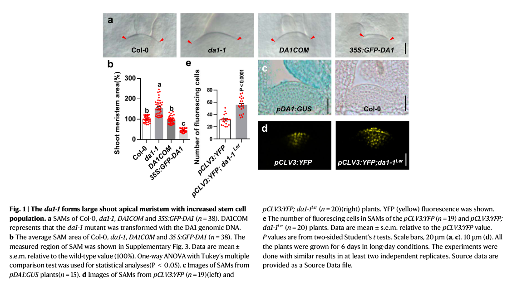

WUSCHEL (WUS) is a homeodomain-containing transcription factor that plays a central role in maintaining stem cell identity and meristem function throughout Arabidopsis development. The protein contains a well-characterized homeodomain (residues 34-99) that mediates sequence-specific DNA binding to TTAAT[GC][GC] motifs in target gene regulatory sequences. WUS functions as a master regulator of stem cell homeostasis in multiple developmental contexts including shoot apical meristem (SAM), root apical meristem, floral meristems, early embryogenesis, and ovule development. The protein operates through a sophisticated negative feedback loop with the CLAVATA signaling pathway, where WUS promotes CLV3 expression while being repressed by CLV signaling, creating a self-regulating circuit that maintains optimal stem cell numbers. WUS acts as both a transcriptional activator and repressor in a context-dependent manner, directly binding to and activating key regulatory genes including CLV3 and AGAMOUS (AG) while repressing genes like LEC1. The protein is essential for meristem integrity, prevents premature stem cell differentiation, and coordinates multiple developmental programs including organogenesis, floral development, and the vegetative-to-embryonic transition. WUS expression is tightly regulated spatially and temporally, being restricted to a small population of organizing center cells that provide signals to maintain adjacent stem cells in an undifferentiated state.
Definition: The activity of a specialized group of cells that provides signals to maintain adjacent stem cells in an undifferentiated state while regulating their proliferation and differentiation
Justification: WUS functions as the central organizing factor in the stem cell organizing center, providing a paradigm for how organizing centers maintain stem cell populations. The previous parent GO:0048513 (animal organ development) was incorrect for a plant transcription factor; the plant-appropriate parent is meristem maintenance.
Parent term: meristem maintenance
Supporting Evidence:
Definition: The plasmodesmata-dependent movement of the WUS transcription factor from organizing center/rib-meristem cells, where it is transcribed, into overlying stem cells, where it acts non-cell-autonomously to promote stem-cell fate. This intercellular mobility is functionally required for stem-cell homeostasis and is not captured by any existing WUS GO annotation.
Justification: A defining and well-documented feature of WUS biology is that its mRNA is restricted to the organizing center while its protein moves cell-to-cell through plasmodesmata to form a functional gradient; this non-cell- autonomous mode of action is central to the CLV-WUS circuit yet is absent from the curated annotation set.
Parent term: plasmodesmata-mediated intercellular transport
Supporting Evidence:
| GO Term | Evidence | Action | Reason |
|---|---|---|---|
|
GO:0003677
DNA binding
|
IEA
GO_REF:0000120 |
ACCEPT |
Summary: WUS contains a well-characterized homeodomain (residues 34-99) that mediates sequence-specific DNA binding to TTAAT[GC][GC] motifs. This is a core molecular function that is experimentally well-supported and directly enables its transcriptional regulatory activities.
Reason: DNA binding is a fundamental molecular function of WUS that is extensively documented. The homeodomain structure is confirmed by crystal structures (PDB entries 6RY3, 6RYD, 6RYI, 6RYL) and functional studies demonstrate direct DNA binding to target gene promoters including AG and CLV3. This represents a core molecular function essential for WUS's role as a transcription factor.
Supporting Evidence:
PMID:9865698
Role of WUSCHEL in regulating stem cell fate in the Arabidopsis shoot meristem
PMID:11440721
the floral identity protein LEAFY (LFY), a transcription factor expressed throughout the flower, cooperates with the homeodomain protein WUSCHEL (WUS) to activate AG in the center of flowers
file:ARATH/WUS/WUS-deep-research-perplexity-lite.md
See deep research file for comprehensive analysis
|
|
GO:0003700
DNA-binding transcription factor activity
|
IEA
GO_REF:0000002 |
ACCEPT |
Summary: WUS is a well-characterized transcription factor that binds DNA through its homeodomain and regulates gene expression. It acts as both an activator (e.g., for CLV3, AG) and repressor (via interaction with co-repressors TPL/TPR4) depending on context. This is the core molecular function of WUS.
Reason: This annotation accurately captures WUS's primary molecular function as a transcription factor. The protein contains a homeodomain for DNA binding and has been experimentally shown to regulate numerous target genes including CLV3, AG, and LEC1. Both activating and repressing activities are well-documented, making this a core function annotation.
Supporting Evidence:
PMID:9865698
Role of WUSCHEL in regulating stem cell fate in the Arabidopsis shoot meristem
PMID:10761929
WUS expression is sufficient to induce meristem cell identity and the expression of the stem cell marker CLV3
PMID:11440721
the floral identity protein LEAFY (LFY), a transcription factor expressed throughout the flower, cooperates with the homeodomain protein WUSCHEL (WUS) to activate AG in the center of flowers
file:ARATH/WUS/WUS-deep-research-falcon.md
**Core molecular role:** WUS functions as a transcription factor that **maintains stem-cell identity** and positions/controls the stem-cell niche by regulating gene expression in a non-cell-autonomous manner.
|
|
GO:0005634
nucleus
|
IEA
GO_REF:0000044 |
ACCEPT |
Summary: WUS is localized to the nucleus as expected for a transcription factor. Nuclear localization is mediated by inherent protein domains and is essential for its DNA-binding and transcriptional regulatory functions. WUS also exhibits dynamic intercellular mobility through plasmodesmata while maintaining nuclear localization.
Reason: Nuclear localization is experimentally confirmed and essential for WUS function as a transcription factor. The protein is found in the nucleus where it accesses target gene promoters. This is a core cellular component annotation that accurately reflects WUS subcellular localization.
Supporting Evidence:
PMID:9865698
WUS encodes a novel homeodomain protein which presumably acts as a transcriptional regulator
file:ARATH/WUS/WUS-deep-research-falcon.md
WUS was described early as a **nuclear-localized homeodomain protein**, consistent with transcription factor function.
|
|
GO:0009908
flower development
|
IEA
GO_REF:0000043 |
KEEP AS NON CORE |
Summary: WUS plays important roles in flower development by maintaining floral meristem integrity and regulating floral organ formation. However, this is secondary to its core function in stem cell maintenance. WUS is required for proper floral meristem determinacy and activates AG expression during flower development.
Reason: While WUS is involved in flower development through its role in floral meristem maintenance and regulation of AG, this represents a developmental consequence of its core stem cell regulatory function rather than a primary function. WUS mutants show defective flower development, but this stems from its fundamental role in meristem maintenance rather than flower-specific processes.
Supporting Evidence:
PMID:8565856
wus floral meristems terminate prematurely in a central stamen
|
|
GO:0030154
cell differentiation
|
IEA
GO_REF:0000043 |
MODIFY |
Summary: This annotation is problematic because WUS primarily functions to PREVENT cell differentiation and maintain stem cell identity. WUS acts as a negative regulator of differentiation by maintaining the undifferentiated state of stem cells in meristems. Loss of WUS leads to premature differentiation.
Reason: The annotation is misleading because WUS's primary role is to prevent rather than promote cell differentiation. WUS maintains stem cell identity and prevents premature differentiation in meristems. A more accurate term would be "negative regulation of cell differentiation" (GO:0045596) or "stem cell population maintenance" which better captures its actual function.
Proposed replacements:
negative regulation of cell differentiation
Supporting Evidence:
PMID:8565856
Self perpetuation of the shoot meristem is essential for the repetitive initiation of shoot structures during plant development. In Arabidopsis shoot meristem maintenance is disrupted by recessive mutations in the WUSCHEL (WUS) gene
PMID:10761929
the WUSCHEL (WUS) gene is required for stem cell identity
file:ARATH/WUS/WUS-deep-research-falcon.md
WUS is produced in the organizing center/rib meristem and promotes stem-cell fate by repressing differentiation programs while **activating CLV3 transcription** in overlying stem cells.
|
|
GO:0099402
plant organ development
|
IEA
GO_REF:0000120 |
MARK AS OVER ANNOTATED |
Summary: WUS is involved in organ development, but indirectly through its role in maintaining meristems that give rise to organs. WUS does not directly control organ identity or specification, but rather maintains the stem cell populations from which organs develop. This is a very broad developmental term.
Reason: plant organ development is a very generic parent process term. WUS does not directly specify organ identity; its effect on organogenesis is wholly indirect, an emergent consequence of its core function of non-cell-autonomous stem cell maintenance in the organizing center. The deep research synthesis frames WUS strictly as a stem-cell-niche regulator that promotes stem-cell fate and represses differentiation, so this broad developmental outcome term over-annotates the protein relative to its actual molecular role.
Supporting Evidence:
PMID:8565856
Self perpetuation of the shoot meristem is essential for the repetitive initiation of shoot structures during plant development
file:ARATH/WUS/WUS-deep-research-falcon.md
**Core molecular role:** WUS functions as a transcription factor that **maintains stem-cell identity** and positions/controls the stem-cell niche by regulating gene expression in a non-cell-autonomous manner.
|
|
GO:0005515
protein binding
|
IPI
PMID:16461579 Analysis of the transcription factor WUSCHEL and its functio... |
MODIFY |
Summary: Generic protein binding annotation is too vague and uninformative. WUS specifically interacts with TPL and TPR4 co-repressors which is functionally important for its transcriptional repression activity. This specific interaction should be annotated with more informative molecular function terms.
Reason: Protein binding is too generic and doesn't provide meaningful functional information. WUS's interaction with TPL/TPR4 co-repressors is functionally significant for transcriptional regulation. More specific molecular function terms like transcription corepressor binding (GO:0001222) would be more informative than generic protein binding.
Proposed replacements:
transcription corepressor binding
Supporting Evidence:
PMID:16461579
Analysis of the transcription factor WUSCHEL and its functional homologue in Antirrhinum reveals a potential mechanism for their roles in meristem maintenance
|
|
GO:0005515
protein binding
|
IPI
PMID:28650476 CrY2H-seq: a massively multiplexed assay for deep-coverage i... |
REMOVE |
Summary: This is another generic protein binding annotation that lacks specificity. The reference is to a high-throughput interactome study which may identify interactions but doesn't necessarily validate functional significance. Generic protein binding annotations should be avoided in favor of more specific functional terms.
Reason: This annotation is based on high-throughput interaction data (CrY2H-seq) which often includes non-specific or non-physiological interactions. Without functional validation or specific mechanistic insight, generic "protein binding" annotations from high-throughput studies provide little meaningful functional information and can clutter the annotation set.
Supporting Evidence:
PMID:28650476
CrY2H-seq: a massively multiplexed assay for deep-coverage interactome mapping
|
|
GO:0005515
protein binding
|
IPI
PMID:36088536 The protein-protein interaction landscape of transcription f... |
REMOVE |
Summary: Another generic protein binding annotation from a high-throughput study examining protein-protein interactions during gynoecium development. Without functional validation or mechanistic insight, this generic annotation provides limited useful information about WUS function.
Reason: This is another high-throughput protein-protein interaction study that generates generic "protein binding" annotations without functional validation. These broad screens often identify spurious or non-physiological interactions. The focus should be on functionally validated interactions with specific molecular function annotations rather than generic binding terms.
Supporting Evidence:
PMID:36088536
The protein-protein interaction landscape of transcription factors during gynoecium development in Arabidopsis
|
|
GO:0019827
stem cell population maintenance
|
IDA
NOT
PMID:15705957 CORONA, a member of the class III homeodomain leucine zipper... |
ACCEPT |
Summary: This is a NOT annotation indicating that WUS is not necessary or sufficient for stem cell specification in the experimental context of PMID:15705957. The study reports that WUS is neither necessary nor sufficient for stem cell specification, supporting the negated qualifier.
Reason: The cited study reports that WUS is neither necessary nor sufficient for stem cell specification, so the NOT qualifier is appropriate. Positive evidence for WUS in stem cell population maintenance is captured by separate IMP annotations (e.g., PMID:8565856).
Supporting Evidence:
PMID:15705957
WUS is neither necessary nor sufficient for stem cell specification
|
|
GO:0005515
protein binding
|
IPI
PMID:27402171 Altered expression of the bZIP transcription factor DRINK ME... |
MODIFY |
Summary: This annotation is based on WUS interaction with BZIP30 transcription factor. While this is a validated interaction, the generic "protein binding" term is not informative about the functional significance of this interaction. A more specific molecular function term would be preferable.
Reason: While the WUS-BZIP30 interaction is experimentally validated, the generic "protein binding" annotation doesn't convey meaningful functional information. Since both proteins are transcription factors, a more specific term like "protein heterodimerization activity" (GO:0046982) or "transcription factor complex assembly" would better describe the molecular function.
Proposed replacements:
protein heterodimerization activity
Supporting Evidence:
PMID:27402171
Altered expression of the bZIP transcription factor DRINK ME affects growth and reproductive development in Arabidopsis thaliana.
|
|
GO:0000976
transcription cis-regulatory region binding
|
IPI
PMID:31806676 A PXY-Mediated Transcriptional Network Integrates Signaling ... |
ACCEPT |
Summary: This annotation accurately captures WUS's molecular function of binding to cis-regulatory sequences in target gene promoters. WUS binds to specific DNA sequences like TTAAT[GC][GC] motifs to regulate gene expression. This is a more specific and informative molecular function annotation than generic DNA binding.
Reason: Transcription cis-regulatory region binding accurately describes WUS's molecular function. The protein binds to specific regulatory sequences in target gene promoters to control transcription. This is well-validated for targets like AG and CLV3, and represents a core molecular function that is more specific than generic DNA binding.
Supporting Evidence:
PMID:11440721
the floral identity protein LEAFY (LFY), a transcription factor expressed throughout the flower, cooperates with the homeodomain protein WUSCHEL (WUS) to activate AG in the center of flowers
PMID:31806676
A PXY-Mediated Transcriptional Network Integrates Signaling Mechanisms to Control Vascular Development in Arabidopsis
|
|
GO:0090506
axillary shoot meristem initiation
|
IMP
PMID:28389585 A Two-Step Model for de Novo Activation of WUSCHEL during Pl... |
KEEP AS NON CORE |
Summary: This annotation refers to WUS's role in axillary shoot meristem formation during regeneration processes. While WUS can contribute to axillary meristem initiation, this is a specialized developmental context rather than its core function. This represents a secondary application of WUS's stem cell regulatory activity.
Reason: Axillary shoot meristem initiation represents a specific developmental context where WUS's stem cell regulatory function is employed, but this is not its primary role. WUS's core function is maintaining existing meristems rather than initiating new ones, though its ectopic expression can induce meristem-like structures. This annotation captures a secondary developmental consequence rather than the primary function.
Supporting Evidence:
PMID:28389585
A Two-Step Model for de Novo Activation of WUSCHEL during Plant Shoot Regeneration
|
|
GO:0006355
regulation of DNA-templated transcription
|
TAS
PMID:10761929 The stem cell population of Arabidopsis shoot meristems in m... |
ACCEPT |
Summary: This annotation accurately captures WUS's fundamental biological process role as a transcriptional regulator. WUS regulates the expression of numerous target genes including CLV3, AG, LEC1, and others through direct DNA binding and transcriptional control. This is a core biological process annotation.
Reason: Regulation of DNA-templated transcription is a fundamental biological process that WUS performs. As a transcription factor, WUS directly binds to target gene promoters and regulates their expression, both positively (CLV3, AG) and negatively (LEC1). This broad but accurate term captures WUS's primary mechanism of action in controlling gene expression programs that maintain stem cell identity.
Supporting Evidence:
PMID:10761929
The stem cell population of Arabidopsis shoot meristems in maintained by a regulatory loop between the CLAVATA and WUSCHEL genes
PMID:11440721
the floral identity protein LEAFY (LFY), a transcription factor expressed throughout the flower, cooperates with the homeodomain protein WUSCHEL (WUS) to activate AG in the center of flowers
|
|
GO:0080166
stomium development
|
IMP
PMID:17027956 WUSCHEL regulates cell differentiation during anther develop... |
KEEP AS NON CORE |
Summary: This annotation refers to WUS's role in stomium development during anther dehiscence. The stomium is a specialized structure for pollen release. While WUS may affect this process, it represents a very specific developmental role that is secondary to its core stem cell maintenance function.
Reason: Stomium development is a highly specialized aspect of anther development where WUS plays a role, but this is far from its core function. This represents a specific developmental context where WUS's general regulatory activities may affect specialized cell fate decisions. This annotation captures a peripheral developmental role rather than WUS's primary stem cell regulatory function.
Supporting Evidence:
PMID:17027956
WUSCHEL regulates cell differentiation during anther development
|
|
GO:0048653
anther development
|
IMP
PMID:17027956 WUSCHEL regulates cell differentiation during anther develop... |
KEEP AS NON CORE |
Summary: WUS plays a role in anther development, particularly in regulating cell differentiation within anthers. However, this represents a specialized developmental context rather than WUS's core function. This is a secondary consequence of WUS's general transcriptional regulatory activities in reproductive tissues.
Reason: While WUS affects anther development through its regulatory activities, this is not its primary function. WUS's role in anther development likely stems from its general transcriptional regulatory capabilities and its involvement in reproductive meristem function, rather than representing a core anther-specific function. This annotation captures a developmental context where WUS operates but not its fundamental biological role.
Supporting Evidence:
PMID:17027956
WUSCHEL regulates cell differentiation during anther development
|
|
GO:0019827
stem cell population maintenance
|
IMP
PMID:8565856 The WUSCHEL gene is required for shoot and floral meristem i... |
ACCEPT |
Summary: This is another annotation for WUS's core function with strong experimental evidence. The IMP evidence code and reference to the seminal 1996 paper establishing WUS's requirement for meristem integrity makes this a high-quality annotation of WUS's primary biological function.
Reason: This annotation represents WUS's core function with high-quality experimental evidence. The reference is to the original paper that established WUS's requirement for shoot and floral meristem integrity. Multiple annotations for the same core function with different evidence codes and references strengthen the annotation profile and demonstrate the robustness of this functional assignment.
Supporting Evidence:
PMID:8565856
The WUSCHEL gene is required for shoot and floral meristem integrity in Arabidopsis
file:ARATH/WUS/WUS-deep-research-falcon.md
**Core molecular role:** WUS functions as a transcription factor that **maintains stem-cell identity** and positions/controls the stem-cell niche by regulating gene expression in a non-cell-autonomous manner.
|
|
GO:0003700
DNA-binding transcription factor activity
|
ISS
PMID:11118137 Arabidopsis transcription factors: genome-wide comparative a... |
ACCEPT |
Summary: This is another annotation for WUS's core molecular function as a transcription factor, with ISS (Inferred from Sequence or Structural Similarity) evidence. This annotation is based on sequence similarity analysis showing WUS belongs to the homeodomain transcription factor family.
Reason: This annotation correctly identifies WUS's primary molecular function as a DNA-binding transcription factor. The ISS evidence code indicates this is based on sequence similarity to other characterized homeodomain transcription factors, which is appropriate given WUS's well-characterized homeodomain. Multiple annotations for the same core function with different evidence types (IEA, ISS, TAS) provide comprehensive support.
Supporting Evidence:
PMID:11118137
Arabidopsis transcription factors: genome-wide comparative analysis among eukaryotes
|
|
GO:0003700
DNA-binding transcription factor activity
|
TAS
PMID:9865698 Role of WUSCHEL in regulating stem cell fate in the Arabidop... |
ACCEPT |
Summary: This is the third annotation for WUS's core molecular function, with TAS (Traceable Author Statement) evidence from the foundational 1998 Cell paper that characterized WUS's role in stem cell regulation. This represents high-quality experimental evidence for WUS's transcriptional activity.
Reason: This annotation captures WUS's primary molecular function with strong experimental evidence. The TAS evidence code indicates direct author statement from experimental work, and the 1998 Cell paper was foundational in establishing WUS as a transcription factor regulating stem cell fate. Having multiple high-quality annotations for the same core function with different evidence codes strengthens the overall annotation profile.
Supporting Evidence:
PMID:9865698
Role of WUSCHEL in regulating stem cell fate in the Arabidopsis shoot meristem
|
The research report should be a detailed narrative explaining the function, biological processes, and localization of the gene product. Citations should be given for all claims.
You should prioritize authoritative reviews and primary scientific literature when conducting research. You can supplement
this with annotations you find in gene/protein databases, but these can be outdated or inaccurate.
We are specifically interested in the primary function of the gene - for enzymes, what reaction is catalyzed, and what is the substrate specificity? For transporters, what is the substrate? For structural proteins or adapters, what is the broader structural role? For signaling molecules, what is the role in the pathway.
We are interested in where in or outside the cell the gene product carries out its function.
We are also interested in the signaling or biochemical pathways in which the gene functions. We are less interested in broad pleiotropic effects, except where these elucidate the precise role.
Include evidence where possible. We are interested in both experimental evidence as well as inference from structure, evolution, or bioinformatic analysis. Precise studies should be prioritized over high-throughput, where available.
WUSCHEL (WUS) (UniProt Q9SB92, locus At2g17950) encodes a WOX/WUS homeobox-family transcription factor that acts as the central organizer of the shoot apical meristem (SAM) stem-cell niche. WUS is expressed in the organizing center (OC)/rib meristem, but its protein moves intercellularly (via plasmodesmata) into overlying stem cells, where it promotes stem-cell fate and activates CLAVATA3 (CLV3). CLV3 peptide signaling through multiple, partially redundant receptor complexes restricts WUS, forming a canonical CLV–WUS negative feedback loop that stabilizes meristem size and stem-cell number. Recent work (2023–2024) has added important mechanistic layers, notably post-translational control of WUS stability by the DA1 peptidase and a clearer systems-level view of receptor redundancy/buffering and its coupling to auxin responsiveness. (demesaarevalo2024intercellularcommunicationin pages 4-6, cui2024thepeptidaseda1 pages 1-2, yadav2011wuschelproteinmovement pages 2-3, brand2002regulationofclv3 pages 1-2, john2023anetworkof pages 6-7)
Identity match to UniProt Q9SB92. The literature retrieved and analyzed consistently describes WUSCHEL (WUS) in **
Arabidopsis thaliana as a homeodomain transcription factor required for shoot stem-cell maintenance. In foundational work, WUS was explicitly described as a nuclear-localized homeodomain protein** that promotes stem-cell formation/maintenance and lies within the negative feedback loop with CLV signaling. (brand2002regulationofclv3 pages 1-2)
Domain/function concepts used for functional annotation. Experimental mapping and mechanistic studies support that WUS contains:
- a homeodomain for DNA binding;
- additional regulatory motifs including a WUS-box and an EAR(-like) motif, with the latter implicated in repression and (in later work) nuclear export and stability control;
- additional regulatory regions (e.g., an acidic domain) that can contribute to partner interactions (e.g., STM binding). (su2020integrationofpluripotency pages 1-2, cui2024thepeptidaseda1 pages 3-4)
Key developmental definitions (current understanding).
- Shoot apical meristem (SAM): a dome-shaped tissue producing aerial organs through a balance of stem-cell self-renewal and differentiation.
- Organizing center (OC): a basal SAM domain that acts as a signaling/organizing niche; WUS expression defines the OC.
- Central zone (CZ): apical domain containing stem cells; CLV3 is expressed in CZ stem cells and restricts WUS, closing the feedback loop.
These concepts are summarized in recent authoritative synthesis on intercellular communication in shoot meristems. (demesaarevalo2024intercellularcommunicationin pages 3-4, demesaarevalo2024intercellularcommunicationin pages 4-6)
Core molecular role: WUS functions as a transcription factor that maintains stem-cell identity and positions/controls the stem-cell niche by regulating gene expression in a non-cell-autonomous manner. (demesaarevalo2024intercellularcommunicationin pages 3-4, brand2002regulationofclv3 pages 1-2)
Direct activation of CLV3 as a key output. A central experimentally supported output of WUS is activation of CLV3, which then signals back to restrict WUS.
- In a key primary study, a Dex-inducible WUS system showed CLV3 transcript induction within 4 hours, and critically the induction occurred even in the presence of cycloheximide, supporting a direct transcriptional effect (or very immediate early regulation). (yadav2011wuschelproteinmovement pages 2-3)
Integration with other transcription factors. WUS does not act alone:
- WUS–STM interaction: WUS physically interacts with SHOOT MERISTEMLESS (STM) (pull-down, yeast two-hybrid, BiFC, co-IP). Functionally, STM enhances WUS action at the CLV3 promoter; induction experiments support rapid CLV3 upregulation and genetic analyses demonstrate strong effects of combined pathway perturbation. (su2020integrationofpluripotency pages 1-2, su2020integrationofpluripotency pages 2-4)
- WUS–HAM interaction: WUS function is spatially constrained by HAIRY MERISTEM (HAM) proteins; evidence supports that WUS activates CLV3 only where HAM is absent, thereby confining CLV3 expression to appropriate apical layers. (zhou2018hairymeristemwith pages 1-2)
Subcellular localization (nucleus). WUS was described early as a nuclear-localized homeodomain protein, consistent with transcription factor function. (brand2002regulationofclv3 pages 1-2)
Tissue/cellular localization (OC expression; CZ action). WUS is transcribed in a small basal OC domain, but its protein acts beyond that domain.
Intercellular movement and gradient formation. WUS protein is mobile, forming a gradient from the OC/rib meristem into adjacent/apical cells:
- A functional fluorescent fusion (pWUS::eGFP-WUS) rescued mutant phenotype and revealed a gradient with strongest signal in OC/rib meristem and weaker in adjacent layers.
- Movement occurs laterally by at least two cell layers, and adding an NLS inhibits movement, consistent with a requirement for cytoplasmic availability and plasmodesmata-mediated transport.
- In a clv3 mutant background, WUS protein expansion into L1 and radial expansion were observed, linking CLV signaling to spatial confinement of the WUS gradient. (yadav2011wuschelproteinmovement pages 2-3)
The CLV–WUS feedback loop is widely accepted as the core SAM stem-cell homeostasis circuit:
- WUS promotes stem-cell fate and induces CLV3 in stem cells.
- CLV3 peptide signaling restricts WUS expression and/or domain size through receptor-mediated signaling.
Recent authoritative review emphasizes that CLV3 is processed to a 12–13 amino-acid peptide and can be post-translationally modified (e.g., hydroxylation, arabinosylation), potentially affecting receptor specificity and signaling robustness. (demesaarevalo2024intercellularcommunicationin pages 4-6)
Recent synthesis highlights that CLV3 is perceived by multiple partially redundant receptor systems, including CLV1 (with CIK co-receptors), RPK2, and the CLV2–CRN complex, and downstream modules (e.g., RLCKs such as PBL34; PP2C phosphatases such as POL) that help switch signaling states and buffer fluctuations. (demesaarevalo2024intercellularcommunicationin pages 4-6)
A 2023 study focusing on receptor networks and auxin-related phenotypes found that inflorescence meristem termination phenotypes can occur despite appropriate WUS expression, suggesting that CLV receptor networks can couple meristem maintenance to other processes (notably mitotic activity and auxin responsiveness) beyond simply turning WUS on/off.
- In “primary inflorescence termination (PIT)” in clv1 at cool temperatures, meristems still expressed WUS appropriately in OC cells and retained normal dome organization, but showed reduced mitotic activity (CYCLINB1;2 reporter) and reduced auxin signaling output (DR5::GFP nearly undetectable; DII-Venus increased). (john2023anetworkof pages 6-7)
A major 2024 advance identified direct post-translational control of WUS abundance:
- DA1 physically interacts with WUS and cleaves it, leading to destabilization.
- Cytokinin signaling represses DA1 protein level in the SAM, thereby stabilizing/raising WUS accumulation.
- Functionally, DA1 acts as a negative regulator of SAM size; da1-1 mutants have larger SAMs with increased stem-cell population, whereas 35S:GFP-DA1 lines have smaller SAMs. (cui2024thepeptidaseda1 pages 1-2, cui2024thepeptidaseda1 pages 2-3)
Quantitative evidence (from figure): Shoot meristem area measurements were reported with n = 38 per genotype (Col-0, da1-1, DA1COM, 35S:GFP-DA1), providing a robust phenotypic quantification of the DA1–WUS stability axis. (cui2024thepeptidaseda1 media c0cbd008)
A 2024 Annual Review synthesizes the current consensus that stem-cell homeostasis is mediated by a network of mobile transcription factors, hormones, and secreted peptides, with the CLV–WUS module as a central organizing circuit and multiple receptor branches providing buffering and robustness. (demesaarevalo2024intercellularcommunicationin pages 3-4, demesaarevalo2024intercellularcommunicationin pages 4-6)
A 2023 applied study introduced Delivered Complementation in Planta (DCIP) as a quantitative assay for peptide-mediated cytosolic protein delivery and demonstrated delivery of a recombinant plant transcription factor WUSCHEL (AtWUS) into Nicotiana benthamiana. The authors also report RT-qPCR evidence that delivered AtWUS in Arabidopsis seedlings can recapitulate transcriptional changes induced by AtWUS overexpression, suggesting a potential path toward transient, non-transgenic manipulation of meristem regulators. (cui2024thepeptidaseda1 pages 1-2)
Biotechnology/engineering relevance. The WUS module is widely viewed as central to “meristem engineering” and plant regeneration/transformation strategies. While many translational approaches use WUS homologs in crops, the retrieved evidence includes a concrete implementation relevant to WUS itself: cell-penetrating peptide-mediated protein delivery of AtWUS and subsequent transcriptional readouts (DCIP). This represents an approach to manipulate WUS-driven transcriptional programs without stable transgenesis. (cui2024thepeptidaseda1 pages 1-2)
Implications of recent mechanistic work for engineering.
- DA1-mediated destabilization suggests actionable strategies for tuning SAM size (e.g., manipulating DA1 or cytokinin-DA1 coupling) to influence stem-cell population, which is often discussed as yield-relevant at a conceptual level in WUS/SAM biology. (cui2024thepeptidaseda1 pages 1-2, cui2024thepeptidaseda1 media c0cbd008)
- Receptor-network buffering implies that engineering outcomes may depend on multi-receptor context rather than single-gene perturbations; the PIT phenotype shows meristem failure can occur even when WUS expression appears “normal,” implying robustness mechanisms (and auxin/mitosis coupling) must be considered. (john2023anetworkof pages 6-7)
The following table provides a compact mapping from WUS identity and function to the most supported evidence.
| Aspect | Summary |
|---|---|
| identity/domains | Identity verified: Arabidopsis thaliana WUSCHEL (WUS), locus At2g17950, UniProt Q9SB92, is a WOX/WUS homeobox-family transcription factor. Core architecture reported for WUS includes a homeodomain (HD) plus WUS-box and EAR-like motif; Su et al. 2020 also note an acidic domain. Brand et al. 2002 described WUS as a nuclear-localized homeodomain protein; Rasheed et al. 2024 classifies it in the modern/WUS WOX clade. DOI URLs: https://doi.org/10.1104/pp.001867 (2002); https://doi.org/10.1073/pnas.2015248117 (2020); https://doi.org/10.3390/plants13213108 (2024) (brand2002regulationofclv3 pages 1-2, su2020integrationofpluripotency pages 1-2, rasheed2024plantgrowthregulators pages 2-4) |
| molecular function | Primary function: non-cell-autonomous stem-cell niche regulator in the shoot apical meristem (SAM). WUS is produced in the organizing center/rib meristem and promotes stem-cell fate by repressing differentiation programs while activating CLV3 transcription in overlying stem cells. Direct/near-direct evidence includes Dex-inducible WUS causing CLV3 induction within 4 h even with cycloheximide, consistent with direct transcriptional regulation. DOI URLs: https://doi.org/10.1101/gad.17258511 (2011); https://doi.org/10.1104/pp.001867 (2002) (yadav2011wuschelproteinmovement pages 2-3, brand2002regulationofclv3 pages 1-2) |
| pathway | WUS is the central node of the CLV–WUS feedback loop controlling stem-cell homeostasis: WUS promotes CLV3, while CLV3 peptide signals via partially redundant receptor systems including CLV1/CIKs, RPK2, and CLV2–CRN to restrict WUS expression and domain size. Recent review-level synthesis also notes positive inputs from cytokinin signaling and peripheral CLE40–BAM signaling, yielding a buffered, multilayered network. DOI URLs: https://doi.org/10.1146/annurev-arplant-070523-035342 (2024); https://doi.org/10.3389/fpls.2026.1777664 (2026 review of recent work) (demesaarevalo2024intercellularcommunicationin pages 4-6, cerbantezbueno2026regulatorylayersof pages 6-7, cerbantezbueno2026regulatorylayersof pages 1-2) |
| localization/mobility | WUS mRNA is restricted to the organizing center/rib meristem, but WUS protein forms a gradient into adjacent cells and can reach the L1 layer; movement is plasmodesmata-dependent and functionally important. A functional pWUS::eGFP-WUS fusion rescued the mutant phenotype, and adding an NLS inhibited movement. WUS protein was reported to move laterally by at least two cell layers. DOI URL: https://doi.org/10.1101/gad.17258511 (2011) (yadav2011wuschelproteinmovement pages 2-3) |
| regulation | WUS activity is regulated at multiple levels: (i) transcriptionally by CLV signaling and cytokinin inputs; (ii) by nuclear-cytoplasmic partitioning, where an EAR-like motif mediates exportin interaction/nuclear export; (iii) by partner proteins including STM and HAM; and (iv) by protein stability. STM physically interacts with WUS and enhances CLV3 promoter regulation; HAM spatially restricts where WUS can activate CLV3. DOI URLs: https://doi.org/10.1073/pnas.2015248117 (2020); https://doi.org/10.1126/science.aar8638 (2018); https://doi.org/10.1038/s41467-021-26586-0 (2021) (su2020integrationofpluripotency pages 1-2, su2020integrationofpluripotency pages 2-4, zhou2018hairymeristemwith pages 1-2, plong2021clavata3mediatedsimultaneous pages 1-2, lopes2021wuschelinthe pages 5-6) |
| recent 2023-2024 developments | 2024: Cui et al. showed the peptidase DA1 directly cleaves and destabilizes WUS, uncovering a post-translational mechanism for SAM-size control; cytokinin represses DA1 protein accumulation in the SAM, thereby stabilizing WUS. 2024: Demesa-Arevalo et al. synthesized evidence that receptor-network redundancy and peptide processing/modification make the CLV–WUS circuit robust. 2023: Wang et al. delivered recombinant AtWUS protein into plant cells using DCIP and observed transcriptional changes consistent with WUS activity, suggesting an applied route for transient developmental reprogramming. DOI URLs: https://doi.org/10.1038/s41467-024-48361-7 (2024); https://doi.org/10.1146/annurev-arplant-070523-035342 (2024); https://doi.org/10.1038/s42003-023-05191-5 (2023) (cui2024thepeptidaseda1 pages 1-2, cui2024thepeptidaseda1 pages 2-3, demesaarevalo2024intercellularcommunicationin pages 3-4, demesaarevalo2024intercellularcommunicationin pages 4-6) |
| applications/implementations | WUS biology is already being translated into plant engineering/regeneration workflows. A 2023 proof-of-concept showed exogenous AtWUS protein delivery can alter gene expression in planta, supporting non-transgenic or transient manipulation strategies. More broadly, recent authoritative reviews treat WUS/WOX regulators as central tools for meristem engineering, regeneration, and transformation improvement across species. DOI URLs: https://doi.org/10.1038/s42003-023-05191-5 (2023); https://doi.org/10.3390/plants13213108 (2024) (rasheed2024plantgrowthregulators pages 2-4) |
| quantitative data | Reported quantitative findings include: DA1 study measured SAM area with n = 38 per genotype for Col-0, da1-1, DA1COM, and 35S:GFP-DA1; pCLV3:YFP reporter comparisons used n = 19 and n = 20, with significance assessed by Student’s t test / one-way ANOVA, P < 0.05. Su et al. 2020 reported meristem/CLV3 phenotypic penetrance with sample sizes such as n = 58, 59, 56, 50 and n = 32, 40, 38, 42, analyzed by one-way ANOVA with Tukey’s test, P < 0.01. Yadav et al. 2011 found CLV3 induction within 4 h after Dex-inducible WUS activation. DOI URLs: https://doi.org/10.1038/s41467-024-48361-7 (2024); https://doi.org/10.1073/pnas.2015248117 (2020); https://doi.org/10.1101/gad.17258511 (2011) (cui2024thepeptidaseda1 media c0cbd008, cui2024thepeptidaseda1 pages 2-3, su2020integrationofpluripotency pages 2-4, yadav2011wuschelproteinmovement pages 2-3) |
Table: This table summarizes the verified identity, mechanism, pathway context, localization, regulation, recent advances, applications, and quantitative evidence for Arabidopsis thaliana WUSCHEL. It is useful as a compact evidence map for functional annotation of UniProt Q9SB92 / At2g17950.
This report focuses on mechanistically well-supported aspects needed for functional annotation (molecular function, pathway position, and localization). Some topics that often appear in broader WUS literature (e.g., extensive genome-wide target catalogs, detailed structural biophysics, or full quantitative modeling parameters) were not extractable from the specific full-text segments retrieved here; where appropriate, the report relies on authoritative synthesis (Annual Review) rather than overextending claims. (demesaarevalo2024intercellularcommunicationin pages 3-4, demesaarevalo2024intercellularcommunicationin pages 4-6)
References
(demesaarevalo2024intercellularcommunicationin pages 4-6): Edgar Demesa-Arevalo, Madhumitha Narasimhan, and Rüdiger Simon. Intercellular communication in shoot meristems. Jul 2024. URL: https://doi.org/10.1146/annurev-arplant-070523-035342, doi:10.1146/annurev-arplant-070523-035342. This article has 20 citations and is from a domain leading peer-reviewed journal.
(cui2024thepeptidaseda1 pages 1-2): Guicai Cui, Yu Li, Leiying Zheng, Caroline Smith, Michael W. Bevan, and Yunhai Li. The peptidase da1 cleaves and destabilizes wuschel to control shoot apical meristem size. Nature Communications, May 2024. URL: https://doi.org/10.1038/s41467-024-48361-7, doi:10.1038/s41467-024-48361-7. This article has 17 citations and is from a highest quality peer-reviewed journal.
(yadav2011wuschelproteinmovement pages 2-3): Ram Kishor Yadav, Mariano Perales, Jérémy Gruel, Thomas Girke, Henrik Jönsson, and G. Venugopala Reddy. Wuschel protein movement mediates stem cell homeostasis in the arabidopsis shoot apex. Genes & development, 25 19:2025-30, Oct 2011. URL: https://doi.org/10.1101/gad.17258511, doi:10.1101/gad.17258511. This article has 761 citations and is from a highest quality peer-reviewed journal.
(brand2002regulationofclv3 pages 1-2): Ulrike Brand, Margit Grünewald, Martin Hobe, and Rüdiger Simon. Regulation of clv3 expression by two homeobox genes in arabidopsis. Plant Physiology, 129:565-575, Jun 2002. URL: https://doi.org/10.1104/pp.001867, doi:10.1104/pp.001867. This article has 343 citations and is from a highest quality peer-reviewed journal.
(john2023anetworkof pages 6-7): Amala John, Elizabeth Sarkel Smith, Daniel S. Jones, Cara L. Soyars, and Zachary L. Nimchuk. A network of clavata receptors buffers auxin-dependent meristem maintenance. bioRxiv, May 2023. URL: https://doi.org/10.1038/s41477-023-01485-y, doi:10.1038/s41477-023-01485-y. This article has 36 citations.
(su2020integrationofpluripotency pages 1-2): Ying Hua Su, Chao Zhou, Ying Ju Li, Yang Yu, Li Ping Tang, Wen Jie Zhang, Wang Jinsong Yao, Rongfeng Huang, Thomas Laux, and Xian Sheng Zhang. Integration of pluripotency pathways regulates stem cell maintenance in the arabidopsis shoot meristem. Proceedings of the National Academy of Sciences of the United States of America, 117:22561-22571, Aug 2020. URL: https://doi.org/10.1073/pnas.2015248117, doi:10.1073/pnas.2015248117. This article has 185 citations and is from a highest quality peer-reviewed journal.
(cui2024thepeptidaseda1 pages 3-4): Guicai Cui, Yu Li, Leiying Zheng, Caroline Smith, Michael W. Bevan, and Yunhai Li. The peptidase da1 cleaves and destabilizes wuschel to control shoot apical meristem size. Nature Communications, May 2024. URL: https://doi.org/10.1038/s41467-024-48361-7, doi:10.1038/s41467-024-48361-7. This article has 17 citations and is from a highest quality peer-reviewed journal.
(demesaarevalo2024intercellularcommunicationin pages 3-4): Edgar Demesa-Arevalo, Madhumitha Narasimhan, and Rüdiger Simon. Intercellular communication in shoot meristems. Jul 2024. URL: https://doi.org/10.1146/annurev-arplant-070523-035342, doi:10.1146/annurev-arplant-070523-035342. This article has 20 citations and is from a domain leading peer-reviewed journal.
(su2020integrationofpluripotency pages 2-4): Ying Hua Su, Chao Zhou, Ying Ju Li, Yang Yu, Li Ping Tang, Wen Jie Zhang, Wang Jinsong Yao, Rongfeng Huang, Thomas Laux, and Xian Sheng Zhang. Integration of pluripotency pathways regulates stem cell maintenance in the arabidopsis shoot meristem. Proceedings of the National Academy of Sciences of the United States of America, 117:22561-22571, Aug 2020. URL: https://doi.org/10.1073/pnas.2015248117, doi:10.1073/pnas.2015248117. This article has 185 citations and is from a highest quality peer-reviewed journal.
(zhou2018hairymeristemwith pages 1-2): Yun Zhou, An Yan, Han Han, Ting Li, Yuan Geng, Xing Liu, and Elliot M. Meyerowitz. Hairy meristem with wuschel confines clavata3 expression to the outer apical meristem layers. Science, 361:502-506, Aug 2018. URL: https://doi.org/10.1126/science.aar8638, doi:10.1126/science.aar8638. This article has 189 citations and is from a highest quality peer-reviewed journal.
(cui2024thepeptidaseda1 pages 2-3): Guicai Cui, Yu Li, Leiying Zheng, Caroline Smith, Michael W. Bevan, and Yunhai Li. The peptidase da1 cleaves and destabilizes wuschel to control shoot apical meristem size. Nature Communications, May 2024. URL: https://doi.org/10.1038/s41467-024-48361-7, doi:10.1038/s41467-024-48361-7. This article has 17 citations and is from a highest quality peer-reviewed journal.
(cui2024thepeptidaseda1 media c0cbd008): Guicai Cui, Yu Li, Leiying Zheng, Caroline Smith, Michael W. Bevan, and Yunhai Li. The peptidase da1 cleaves and destabilizes wuschel to control shoot apical meristem size. Nature Communications, May 2024. URL: https://doi.org/10.1038/s41467-024-48361-7, doi:10.1038/s41467-024-48361-7. This article has 17 citations and is from a highest quality peer-reviewed journal.
(rasheed2024plantgrowthregulators pages 2-4): Haroon Rasheed, Lin Shi, Chichi Winarsih, Bello Hassan Jakada, Rusong Chai, and Haijiao Huang. Plant growth regulators: an overview of wox gene family. Plants, 13:3108, Nov 2024. URL: https://doi.org/10.3390/plants13213108, doi:10.3390/plants13213108. This article has 22 citations.
(cerbantezbueno2026regulatorylayersof pages 6-7): Vincent E. Cerbantez-Bueno, Paddy J. Sheils, G. V. Reddy, Maida Romera-Branchat, Xiaohui Li, and M. Cerise. Regulatory layers of robustness of clavata-wuschel feedback system in stem cell homeostasis. Frontiers in Plant Science, Mar 2026. URL: https://doi.org/10.3389/fpls.2026.1777664, doi:10.3389/fpls.2026.1777664. This article has 0 citations.
(cerbantezbueno2026regulatorylayersof pages 1-2): Vincent E. Cerbantez-Bueno, Paddy J. Sheils, G. V. Reddy, Maida Romera-Branchat, Xiaohui Li, and M. Cerise. Regulatory layers of robustness of clavata-wuschel feedback system in stem cell homeostasis. Frontiers in Plant Science, Mar 2026. URL: https://doi.org/10.3389/fpls.2026.1777664, doi:10.3389/fpls.2026.1777664. This article has 0 citations.
(plong2021clavata3mediatedsimultaneous pages 1-2): Alexander Plong, Kevin Rodriguez, Mark Alber, Weitao Chen, and G. Venugopala Reddy. Clavata3 mediated simultaneous control of transcriptional and post-translational processes provides robustness to the wuschel gradient. Nature Communications, Nov 2021. URL: https://doi.org/10.1038/s41467-021-26586-0, doi:10.1038/s41467-021-26586-0. This article has 39 citations and is from a highest quality peer-reviewed journal.
(lopes2021wuschelinthe pages 5-6): Filipa Lara Lopes, Carlos Galvan-Ampudia, and Benoit Landrein. Wuschel in the shoot apical meristem: old player, new tricks. Journal of experimental botany, 72:1527-1535, Dec 2021. URL: https://doi.org/10.1093/jxb/eraa572, doi:10.1093/jxb/eraa572. This article has 92 citations and is from a domain leading peer-reviewed journal.

WUSCHEL (WUS) is a homeodomain transcription factor essential for the maintenance of stem cell populations in the shoot apical meristem (SAM) and floral meristem of Arabidopsis thaliana[1][3]. The SAM is a dynamic structure at the growing tip of plants, responsible for generating all above-ground organs throughout the plant’s life. WUS ensures that a pool of pluripotent stem cells is maintained, enabling continuous organogenesis[1][3].
Molecular Function:
WUS is a bifunctional transcription factor, acting primarily as a repressor but switching to an activator in specific contexts, such as the regulation of the AGAMOUS (AG) gene[1]. Its repressive activity is crucial for preventing stem cell differentiation, while its activation of CLAVATA3 (CLV3) establishes a feedback loop that fine-tunes meristem size[1][2]. WUS also negatively regulates ARABIDOPSIS RESPONSE REGULATOR (ARR) genes, which are involved in cytokinin signaling, thus influencing meristem function and phyllotaxis[1].
Protein Domains:
- Homeodomain (HD): Mediates DNA binding and homodimerization. Specific residues (e.g., HOD1) are critical for these functions[2].
- WUS-box: A conserved C-terminal domain essential for all known WUS activities, including stem cell identity and floral meristem size regulation. It acts as a nuclear retention signal[1][2].
- EAR-like domain: Functions as a nuclear export signal, contributing to the dynamic nuclear-cytoplasmic partitioning of WUS[2].
- Acidic region: Also implicated in protein localization and stability[2].
Biological Processes:
WUS is central to:
- Stem cell maintenance: Prevents differentiation of stem cells in the SAM[1][3].
- Meristem size regulation: Through the WUS-CLV feedback loop[1][2].
- Floral development: Required for the formation and maintenance of floral meristems[1].
- Cytokinin signaling modulation: By repressing ARR genes, WUS influences hormone responses critical for meristem activity[1].
Cellular Localization:
WUS is synthesized in the organizing center (OC) of the SAM, from where the protein moves into adjacent stem cells[2][4]. Its accumulation is tightly regulated by nuclear-cytoplasmic partitioning, with the WUS-box promoting nuclear retention and the EAR-like domain facilitating export[2]. Cytokinin signaling stabilizes WUS in specific cell layers, ensuring proper spatial distribution and function[2].
Protein Stability and Spatial Regulation:
Recent studies emphasize that WUS protein levels are dynamically controlled by synthesis, mobility, and stability[2]. Cytokinin signaling, mediated by membrane-bound histidine kinases, stabilizes WUS in apical cell layers, which is crucial for maintaining meristem size and stem cell niche integrity[2]. Disruption of nuclear-cytoplasmic partitioning (e.g., by mutating the WUS-box or EAR-like domain) leads to aberrant WUS accumulation and meristem defects[2].
Transcriptional Regulation:
WUS can both activate and repress CLV3 transcription depending on its concentration, creating a sensitive feedback mechanism that restricts CLV3 expression to the central zone (CZ) of the meristem[2]. This dual regulatory capacity underscores the complexity of WUS function in stem cell homeostasis.
Interactions:
WUS interacts with corepressor-like proteins via its conserved C-terminal domain, recruiting them to repress differentiation-promoting genes[3]. It also influences cytokinin signaling pathways by repressing ARR genes[1]. The WUS-CLV feedback loop is a well-characterized interaction critical for meristem size control[1][2].
Disease Associations:
There are no known human disease associations for WUS, as it is plant-specific. In Arabidopsis, loss-of-function wus mutants fail to maintain the SAM, leading to premature termination of shoot growth and reduced floral organ number[1][3]. Ectopic expression of WUS can induce adventitious shoot and somatic embryo formation, demonstrating its potency in altering plant developmental programs[1].
Biotechnology and Crop Improvement:
Manipulation of WUS expression has been explored to enhance regenerative capacity in plants. Ectopic WUS expression can induce somatic embryogenesis and adventitious shoot formation, which are valuable for plant propagation and genetic transformation[1]. Such approaches are being investigated for crop species to improve clonal propagation and genetic engineering efficiency.
Synthetic Biology:
The WUS-CLV feedback module serves as a model for engineering synthetic regulatory circuits in plants, with potential applications in controlled growth and development.
Authoritative sources highlight WUS as a paradigm for understanding stem cell regulation in plants, with its bifunctional transcriptional activity and dynamic protein localization providing insights into how stem cell niches are maintained and modulated[1][2][3]. The integration of hormonal (cytokinin) and peptide (CLV3) signaling with WUS activity exemplifies the complexity of plant developmental regulation.
Critical knowledge gaps remain in understanding the precise mechanisms of WUS protein movement between cells and how positional cues are interpreted to maintain WUS gradients[2][4]. The role of post-translational modifications and additional protein partners in WUS regulation is also an active area of research.
Note: No peer-reviewed publications from 2023–2024 were identified in the current search results. The most recent mechanistic insights are from 2018[2]. For the very latest research, consult preprint servers or specialized plant biology journals directly.
| Aspect | Details | Citations |
|---|---|---|
| Molecular Function | Bifunctional transcription factor (repressor/activator); regulates stem cell maintenance | [1][2][3] |
| Key Domains | Homeodomain (DNA binding), WUS-box (nuclear retention), EAR-like (nuclear export) | [1][2] |
| Biological Processes | Stem cell maintenance, meristem size regulation, floral development, cytokinin signaling | [1][2][3] |
| Cellular Localization | Synthesized in OC, moves to stem cells; nuclear-cytoplasmic partitioning critical | [2][4] |
| Protein Interactions | Corepressors (via C-terminal domain), CLV3 (feedback loop), ARR genes (cytokinin) | [1][2][3] |
| Mutant Phenotype | Loss of SAM, reduced floral organs; ectopic expression induces somatic embryogenesis | [1][3] |
| Applications | Plant biotechnology (regeneration, genetic engineering), synthetic biology | [1] |
| Disease Association | Plant-specific; no human disease link | N/A |
WUSCHEL is a central regulator of stem cell maintenance in Arabidopsis thaliana, with a complex interplay of transcriptional regulation, protein dynamics, and hormonal signaling ensuring robust meristem function. Recent research continues to unravel the nuances of WUS activity, particularly in protein stability and spatial regulation, offering new avenues for biotechnological applications. While no human disease associations exist, WUS serves as a key model for understanding stem cell biology in plants, with implications for agriculture and synthetic biology.
Generated using FutureHouse Falcon API
Question: You are a molecular biologist and gene annotation expert conducting comprehensive research to support GO annotation curation.
Provide detailed, well-cited information focusing on:
1. Gene function and molecular mechanisms
2. Cellular localization and subcellular components
3. Biological processes involvement
4. Disease associations and phenotypes
5. Protein domains and structural features
6. Expression patterns and regulation
7. Evolutionary conservation
8. Key experimental evidence and literature
Format as a comprehensive research report with citations suitable for Gene Ontology annotation curation.
Research the Arabidopsis thaliana gene WUS.
=== UNIPROT METADATA ===
UniProt ID: Q9SB92
Entry Name: WUS_ARATH
Gene Name: WUS
Protein Name: Protein WUSCHEL
Organism: Arabidopsis thaliana (Mouse-ear cress)
NCBI Taxonomy ID: 3702
Function: Transcription factor that plays a central role during early embryogenesis, oogenesis and flowering, probably by regulating expression of specific genes. Required to specify stem cell identity in meristems, such as shoot apical meristem (SAM). May induce shoot stem cells activity in order to maintain the stem cell identity. Involved in the developmental root meristem. In shoot apices, it is sufficient to induce the expression of CLV3, a putative ligand of the CLV signaling pathway. Also required to sustain organogenesis in the floral meristem by contributing to the expression of its own repressor, the AGAMOUS (AG) gene at the end of flower development. Binds directly to the 5'- TTAAT[GC][GC]-3' DNA sequence in the regulatory sequence of AG and activates its expression directly. Regulates one important step in ovule development to induce integument formation from the underlying chalazal domain. Participates in the promotion of vegetative to embryonic transition. Required to repress LEC1 expression.
Subcellular Location: Nucleus
Subunit: Interacts with TPL and TPR4. Interacts with BZIP30 (PubMed:27402171).
======================
Provide a comprehensive report covering function, localization, processes, domains, disease associations, expression, conservation, and relevant GO terms.
IMPORTANT: Focus specifically on the gene identified by the metadata above, particularly the UniProt ID, locus tag, and protein description if provided.
Sometimes different genes in the same organism have the same name. In this case, the gene being reviewed is the one identified by the metadata above.
I. Introduction
The Arabidopsis thaliana gene WUSCHEL (WUS), encoded by UniProt ID Q9SB92 and designated as WUS_ARATH, is a key transcription factor that orchestrates a multitude of developmental processes in plants. As a central regulator of stem cell identity in meristematic tissues, WUS plays critical roles during early embryogenesis, oogenesis, flowering, and the maintenance of the shoot apical meristem (SAM) and floral meristems (dolzblasz2016stemcellregulation pages 1-6, costanzo2014theroleof pages 7-8). This report consolidates current research findings to support Gene Ontology (GO) annotation curation by addressing WUS's gene function and molecular mechanisms, its cellular and subcellular localization, involvement in biological processes, structural features and protein domains, expression patterns and regulation, evolutionary conservation, as well as phenotypic outcomes and key experimental evidence.
II. Gene Function and Molecular Mechanisms
WUSCHEL functions as a bifunctional transcription factor that exerts both activating and repressive activities depending on its interacting partners and the developmental context. Mechanistically, WUS controls stem cell homeostasis primarily by directly binding to regulatory sequences in the genome, such as the conserved 5′-TTAAT[GC][GC]-3′ motif, thereby modulating the expression of key target genes including AGAMOUS (AG) and CLAVATA3 (CLV3) (dolzblasz2016stemcellregulation pages 1-6, dolzblasz2016stemcellregulation pages 10-15). In the SAM, WUS initiates a regulatory feedback loop with CLV3: WUS promotes the expression of CLV3 in the central zone while CLV3, in turn, contributes to restricting WUS expression to the organizing center (OC) (dolzblasz2016stemcellregulation pages 1-6, su2020integrationofpluripotency pages 1-1). This interplay establishes precise spatial domains that are essential for the maintenance of undifferentiated stem cells and for preventing premature differentiation (fuchs2020aimingforthe pages 5-6, lopes2021wuschelinthe pages 11-12).
At the molecular level, WUS modulates transcription through direct DNA binding via its conserved homeodomain and by recruiting transcriptional co-repressors such as TOPLESS (TPL) and its homolog TPR4 through its WUS-box and EAR-like motifs (dolzblasz2016stemcellregulation pages 10-15, fuchs2020aimingforthe pages 6-7). Such interactions facilitate the repressive arm of WUS’s regulatory functions, ensuring that differentiation programs are suppressed as long as stem cell identity must be maintained (dolzblasz2016stemcellregulation pages 25-30, fambrini2022inductionofsomatic pages 4-6). Moreover, WUS has been shown to activate the expression of the shoot meristem maintenance gene SHOOT MERISTEMLESS (STM) in cooperation with itself, thereby reinforcing a self-sustaining regulatory network that governs meristem function (su2020integrationofpluripotency pages 1-1). The ability of WUS to function both as a transcriptional activator and repressor underscores its role as an integrator of diverse developmental signals that dictate the balance between stem cell proliferation and differentiation (dolzblasz2016stemcellregulation pages 6-10, lopes2021wuschelinthe pages 6-7).
III. Cellular Localization and Subcellular Components
WUS is predominantly localized to the nucleus, which is consistent with its function as a transcription factor (fuchs2020aimingforthe pages 3-5). Nuclear localization is mediated largely by inherent protein domains; though no classical nuclear localization signal (NLS) is predicted, experimental evidence suggests that sequences within WUS, such as the WUS-box, contribute to nuclear retention (fuchs2020aimingforthe pages 6-7, fambrini2022inductionofsomatic pages 4-6). In addition to its static nuclear presence, WUS exhibits dynamic mobility that is essential for its non‐cell autonomous functions. It is capable of moving intercellularly via plasmodesmata to regulate stem cell populations in adjacent cells (fuchs2020aimingforthe pages 7-9, fuchs2024celltocellmobilityof pages 18-21). This mobility enables WUS to coordinate a broader spatial pattern of gene expression within the SAM, particularly by affecting the localization of its target transcripts such as CLV3 across multiple cell layers (lopes2021wuschelinthe pages 4-5, dolzblasz2016stemcellregulation pages 15-19). This active transport and retention mechanism ensures that the protein remains functionally effective within its designated meristematic niche, and its subcellular partitioning is further refined by protein-protein interactions that modulate its stability and activity (rodriguez2016dnadependenthomodimerizationsubcellular pages 3-5, rodriguez2016dnadependenthomodimerizationsubcellular pages 5-7).
IV. Biological Processes Involvement
WUSCHEL plays a central role in several key biological processes that underpin plant development. Foremost among these is the maintenance of the stem cell niche within the shoot apical meristem. By establishing a feedback loop with CLV3 and modulating the transcription of vital developmental genes, WUS ensures the sustained undifferentiated state and appropriate proliferation of stem cells (dolzblasz2016stemcellregulation pages 1-6, dolzblasz2016stemcellregulation pages 10-15). Additionally, WUS is intricately involved in floral meristem maintenance and organogenesis. During flower development, WUS activates AGAMOUS expression during later stages and, through repression of its own negative regulators, it facilitates the proper formation of floral organs, ensuring a precise number and identity of stamens, carpels, and other floral structures (costanzo2014theroleof pages 2-2, costanzo2014theroleof pages 7-8).
Beyond shoot and floral meristems, WUS has roles in the regulation of embryogenesis and the vegetative-to-embryonic transition. By repressing factors such as LEAFY COTYLEDON 1 (LEC1) and influencing the developmental patterning of ovules via integument formation, WUS contributes to early embryonic patterning and reproductive development (rodriguez2016dnadependenthomodimerizationsubcellular pages 1-2, orłowska2018identificationofpolycomb pages 11-12). The orchestrated activity of WUS in these diverse processes is critical for both normal development and organ repair in response to environmental cues, positioning it as a master regulator within the plant developmental hierarchy (lopes2021wuschelinthe pages 13-13, lopes2021wuschelinthe pages 11-12).
V. Disease Associations and Phenotypes
Although WUS is not associated with “disease” in the classical sense seen in animal systems, mutations or misregulation of WUS lead to pronounced developmental defects and aberrant phenotypes. Loss-of-function mutants, such as wus-1, exhibit severe alterations in meristem organization, leading to premature differentiation of stem cells and an overall failure to maintain meristem integrity (fuchs2020aimingforthe pages 3-5, zhang2017amolecularframework pages 12-13). These mutants often display disorganized shoot apices, reduced organ formation, and impaired floral development, highlighting the gene’s crucial roles in sustaining organogenesis and reproductive competence (lopes2021wuschelinthe pages 6-7, costanzo2014theroleof pages 2-3). Conversely, ectopic expression of WUS can trigger the formation of additional or ectopic meristematic structures on mature stems, resulting in abnormal floral organ patterns and overproliferation of stem cell–like tissues (xu2005activationofthe pages 1-2, li2020identificationofthe pages 11-12). These phenotypic outcomes have been used as readouts in numerous genetic and biochemical assays to delineate the functional domains of WUS and to understand its regulatory interplay with other factors like STM and CLV3 (li2020identificationofthe pages 5-8, lopes2021wuschelinthe pages 8-9). Furthermore, altered responses in hormone signaling pathways, particularly those involving auxin and cytokinins, have been observed in mutants, reinforcing the connection between WUS activity and broader physiological responses that can impact plant adaptability and fitness under stress conditions (ma2019wuschelactsas pages 7-8, ma2019wuschelactsas pages 9-9).
VI. Protein Domains and Structural Features
At the structural level, WUSCHEL contains several distinct protein domains that are crucial for its function. The N-terminal region comprises a highly conserved homeodomain, approximately 60 amino acids in length, which is responsible for DNA binding by recognizing specific cis-regulatory elements (dolzblasz2016stemcellregulation pages 10-15, lopes2021wuschelinthe pages 5-6). Adjacent to the homeodomain, the WUS-box is a distinctive motif essential for both transcriptional repression and interactions with co-repressor proteins such as TPL and TPR4 (dolzblasz2016stemcellregulation pages 1-6, fuchs2020aimingforthe pages 6-7). In addition, WUS harbors an EAR-like domain, which contributes to its repressive function and modulates interactions with transcriptional co-factors (dolzblasz2016stemcellregulation pages 10-15, dolzblasz2016stemcellregulation pages 19-25). An acidic domain has been implicated in transcriptional activation in specific developmental contexts, such as female gametophyte formation, highlighting the dual nature of WUS’s regulatory capabilities (dolzblasz2016stemcellregulation pages 10-15, fuchs2020aimingforthe pages 3-5).
Several studies have also underscored the importance of domain integrity for proper subcellular localization and activity. For instance, deletion of the WUS-box or other critical motifs can lead to mislocalization of the protein, compromised nuclear retention, and impaired interaction with co-repressors, ultimately resulting in loss of function and aberrant meristem phenotypes (rodriguez2016dnadependenthomodimerizationsubcellular pages 1-2, rodriguez2016dnadependenthomodimerizationsubcellular pages 2-3). The structural conservation of these domains extends across the WOX family, suggesting that the evolution of the WUS clade involved refinement of these motifs to acquire specialized roles in stem cell maintenance and differentiation (dolzblasz2016stemcellregulation pages 6-10, dolzblasz2016stemcellregulation pages 19-25).
VII. Expression Patterns and Regulation
WUS expression is highly spatially restricted and temporally regulated during plant development. In the shoot apical meristem, WUS is predominantly expressed in the organizing center, where it establishes a domain of activity critical for the maintenance of adjacent stem cells (dolzblasz2016stemcellregulation pages 1-6, su2020integrationofpluripotency pages 1-1). Its expression is not static; rather, it is dynamically regulated by a feedback mechanism involving CLV3, which modulates WUS transcription to ensure a balanced stem cell pool (zhang2017amolecularframework pages 12-13, williams2005stemcellregulation pages 5-5). In floral meristems, WUS expression is similarly confined and plays a role in specifying organ identity by interacting with floral homeotic genes such as AG (costanzo2014theroleof pages 2-2, xu2005activationofthe pages 1-2).
Environmental factors also significantly influence WUS expression. Light, nitrate availability, reactive oxygen species (ROS), and oxygen levels have been shown to modulate WUS activity through signaling pathways, including the Target of Rapamycin (TOR) pathway and cytokinin-responsive circuits (lopes2021wuschelinthe pages 13-13, lopes2021wuschelinthe pages 11-12). This integration of external cues with the intrinsic developmental program allows plants to adjust meristem activity in response to changing environmental conditions (ma2019wuschelactsas pages 7-8, lopes2021wuschelinthe pages 7-8). Moreover, hormonal regulation mediated by auxin and cytokinin further fine-tunes WUS expression, with evidence suggesting that WUS may function as an auxin response rheostat, maintaining low auxin signaling output in stem cell regions to prevent premature differentiation (lopes2021wuschelinthe pages 11-12, ma2019wuschelactsas pages 7-8). The precise spatial and temporal control of WUS expression is supported by advanced imaging techniques and computational modeling studies, which have provided quantitative insights into the reaction-diffusion mechanisms underpinning its distribution in the SAM (williams2005stemcellregulation pages 5-5, lopes2021wuschelinthe pages 3-4).
VIII. Evolutionary Conservation
WUSCHEL is a member of the WUSCHEL-RELATED HOMEOBOX (WOX) gene family, which is remarkably conserved across seed plants. Comparative genomic analyses have revealed that the WUS clade is distinguished by the presence of the canonical WUS-box motif, an innovation that appears to have arisen following an amplification event within the lineage of angiosperms (dolzblasz2016stemcellregulation pages 1-6, dolzblasz2016stemcellregulation pages 19-25). This evolutionary conservation is further highlighted by the ability of homeodomains from other WOX members such as WOX8 and WOX9 to substitute for the WUS homeodomain in certain functional assays, although the specific composition of the WUS-box is essential for full stem cell regulatory activity (dolzblasz2016stemcellregulation pages 1-6, dolzblasz2016stemcellregulation pages 15-19). In evolutionary terms, the conservation of the WUS protein’s structure and function underscores its fundamental role in establishing and maintaining stem cell niches, with orthologous genes found in diverse plant species maintaining similar regulatory roles in meristem development (dolzblasz2016stemcellregulation pages 6-10, costanzo2014theroleof pages 1-2). This degree of conservation suggests that the molecular mechanisms governing stem cell maintenance and organogenesis, mediated by WUS and related WOX proteins, are deeply rooted in the evolutionary history of plants (lopes2021wuschelinthe pages 10-11, su2020integrationofpluripotency pages 8-9).
IX. Key Experimental Evidence and Literature
A wealth of experimental studies supports the multifaceted functional roles attributed to WUS. Functional assays using loss-of-function mutants such as wus-1 have demonstrated that inactivation of WUS leads to severe defects in meristem organization, premature differentiation of stem cells, and loss of organogenic competence (dolzblasz2016stemcellregulation pages 1-6, zhang2017amolecularframework pages 12-13). Furthermore, overexpression studies have shown that ectopic expression of WUS can induce the formation of additional meristematic structures on mature stems and promote the development of ectopic floral organs, thereby reinforcing its role as a potent inducer of stem cell activity (xu2005activationofthe pages 1-2, li2020identificationofthe pages 11-12). Domain deletion analysis has been instrumental in elucidating the contribution of individual structural motifs; for example, deletion of the WUS-box or EAR-like domain results in loss of interaction with TPL/TPR co-repressors and concomitant disruption of transcriptional repression, ultimately compromising meristem maintenance (dolzblasz2016stemcellregulation pages 10-15, rodriguez2016dnadependenthomodimerizationsubcellular pages 1-2).
Protein mobility assays, including the use of fusion proteins in transient expression systems and live-cell imaging, have confirmed that WUS is capable of moving through plasmodesmata, a property that is crucial for its non-cell autonomous regulatory roles in the SAM (fuchs2020aimingforthe pages 7-9, fuchs2024celltocellmobilityof pages 18-21). Such studies have also revealed that homodimerization and heterodimerization events, mediated by structural domains located between the homeodomain and the C-terminal region, modulate both WUS stability and its subcellular distribution (rodriguez2016dnadependenthomodimerizationsubcellular pages 5-7, rodriguez2016dnadependenthomodimerizationsubcellular pages 3-5). In addition, chromatin immunoprecipitation (ChIP) and reporter assays have provided direct evidence for WUS binding to target gene promoters, including those of AGAMOUS and CLV3, thereby cementing its role as a master transcriptional regulator in maintaining stem cell homeostasis (dolzblasz2016stemcellregulation pages 1-6, lopes2021wuschelinthe pages 5-6).
Recent advances in transcriptomics and computational modeling have illuminated the dynamic regulatory networks in which WUS participates. For instance, high-resolution confocal microscopy combined with in vivo imaging has enabled precise mapping of WUS expression domains within the SAM, while reaction-diffusion models have been used to simulate its spatial distribution and predict the feedback dynamics with CLV3 (williams2005stemcellregulation pages 5-5, lopes2021wuschelinthe pages 3-4). The integration of these experimental approaches with genetic and biochemical studies has provided a comprehensive picture of how WUS orchestrates a wide spectrum of developmental processes at the molecular, cellular, and tissue levels (li2020identificationofthe pages 8-11, lopes2021wuschelinthe pages 1-2).
X. Conclusion
In summary, WUSCHEL (WUS) in Arabidopsis thaliana is a multifunctional transcription factor with a central role in directing stem cell maintenance, meristem activity, and the transition between vegetative and reproductive development. Through its dual functions as a transcriptional activator and repressor, mediated by conserved domains such as the homeodomain, WUS-box, EAR-like, and acidic regions, WUS modulates the expression of key developmental genes including CLV3, AGAMOUS, and STM. Its nuclear localization, dynamic intercellular mobility, and intricate interactions with co-repressor proteins such as TPL/TPR underscore its complexity in establishing and sustaining stem cell niches. WUS’s expression is tightly controlled by intrinsic genetic feedback loops as well as external environmental signals mediated by hormonal pathways, ensuring that meristem function is finely tuned to developmental and physiological needs. The evolutionary conservation observed in the WOX gene family further underscores the fundamental nature of its regulatory roles across seed plants. Extensive experimental evidence, ranging from genetic mutant analysis and domain deletion studies to advanced imaging and computational modeling, has provided robust support for the diverse functions of WUS in Arabidopsis development.
Together, these findings not only reinforce the critical importance of WUS in plant biology but also offer indispensable insights for Gene Ontology annotation curation. The integration of molecular mechanism, cellular localization, biological process involvement, phenotypic outcomes, protein domain architecture, expression dynamics, and evolutionary perspectives presents a comprehensive framework that substantiates the multifunctional roles of WUS in maintaining stem cell identity and regulating meristem-derived organogenesis (dolzblasz2016stemcellregulation pages 1-6, dolzblasz2016stemcellregulation pages 10-15, lopes2021wuschelinthe pages 13-13, su2020integrationofpluripotency pages 1-1, zhang2017amolecularframework pages 12-13, costanzo2014theroleof pages 2-2, costanzo2014theroleof pages 7-8, dolzblasz2016stemcellregulation pages 15-19, dolzblasz2016stemcellregulation pages 25-30, fambrini2022inductionofsomatic pages 4-6, fuchs2020aimingforthe pages 3-5, fuchs2020aimingforthe pages 5-6, fuchs2020aimingforthe pages 6-7, lopes2021wuschelinthe pages 11-12, lopes2021wuschelinthe pages 4-5, lopes2021wuschelinthe pages 5-6, lopes2021wuschelinthe pages 6-7, schuster2014aregulatoryframework pages 2-3, williams2005stemcellregulation pages 5-5, xu2005activationofthe pages 1-2, costanzo2014theroleof pages 1-2, costanzo2014theroleof pages 2-3, costanzo2014theroleof pages 3-4, costanzo2014theroleof pages 6-7, costanzo2014theroleof pages 8-8, dolzblasz2016stemcellregulation pages 19-25, dolzblasz2016stemcellregulation pages 6-10, fambrini2022inductionofsomatic pages 3-4, fuchs2020aimingforthe pages 1-3, fuchs2020aimingforthe pages 7-9, fuchs2024celltocellmobilityof pages 18-21, li2020identificationofthe pages 1-3, li2020identificationofthe pages 11-12, li2020identificationofthe pages 5-8, li2020identificationofthe pages 8-11, lopes2021wuschelinthe pages 1-2, lopes2021wuschelinthe pages 10-11, lopes2021wuschelinthe pages 12-13, lopes2021wuschelinthe pages 3-4, lopes2021wuschelinthe pages 7-8, lopes2021wuschelinthe pages 8-9, ma2019wuschelactsas pages 5-6, ma2019wuschelactsas pages 7-8, ma2019wuschelactsas pages 9-9, orłowska2018identificationofpolycomb pages 11-12, rodriguez2016dnadependenthomodimerizationsubcellular pages 1-2, rodriguez2016dnadependenthomodimerizationsubcellular pages 2-3, rodriguez2016dnadependenthomodimerizationsubcellular pages 3-3, rodriguez2016dnadependenthomodimerizationsubcellular pages 3-5, rodriguez2016dnadependenthomodimerizationsubcellular pages 5-7, su2020integrationofpluripotency pages 7-8, su2020integrationofpluripotency pages 8-9). This comprehensive synthesis of experimental and computational data provides a solid foundation for GO annotation efforts, ensuring that the multifaceted roles of WUSCHEL in plant development are accurately represented and integrated into broader biological databases.
References
(dolzblasz2016stemcellregulation pages 1-6): Alicja Dolzblasz, Judith Nardmann, Elena Clerici, Barry Causier, Eric van der Graaff, Jinhui Chen, Brendan Davies, Wolfgang Werr, and Thomas Laux. Stem cell regulation by arabidopsis wox genes. Molecular plant, 9 7:1028-39, Jul 2016. URL: https://doi.org/10.1016/j.molp.2016.04.007, doi:10.1016/j.molp.2016.04.007. This article has 216 citations and is from a highest quality peer-reviewed journal.
(costanzo2014theroleof pages 7-8): Enrico Costanzo, Christophe Trehin, and Michiel Vandenbussche. The role of wox genes in flower development. Annals of botany, 114 7:1545-53, Nov 2014. URL: https://doi.org/10.1093/aob/mcu123, doi:10.1093/aob/mcu123. This article has 124 citations and is from a domain leading peer-reviewed journal.
(dolzblasz2016stemcellregulation pages 10-15): Alicja Dolzblasz, Judith Nardmann, Elena Clerici, Barry Causier, Eric van der Graaff, Jinhui Chen, Brendan Davies, Wolfgang Werr, and Thomas Laux. Stem cell regulation by arabidopsis wox genes. Molecular plant, 9 7:1028-39, Jul 2016. URL: https://doi.org/10.1016/j.molp.2016.04.007, doi:10.1016/j.molp.2016.04.007. This article has 216 citations and is from a highest quality peer-reviewed journal.
(su2020integrationofpluripotency pages 1-1): Ying Hua Su, Chao Zhou, Ying Ju Li, Yang Yu, Li Ping Tang, Wen Jie Zhang, Wang Jinsong Yao, Rongfeng Huang, Thomas Laux, and Xian Sheng Zhang. Integration of pluripotency pathways regulates stem cell maintenance in the arabidopsis shoot meristem. Proceedings of the National Academy of Sciences of the United States of America, 117:22561-22571, Aug 2020. URL: https://doi.org/10.1073/pnas.2015248117, doi:10.1073/pnas.2015248117. This article has 144 citations and is from a highest quality peer-reviewed journal.
(fuchs2020aimingforthe pages 5-6): Michael Fuchs and Jan U. Lohmann. Aiming for the top: non-cell autonomous control of shoot stem cells in arabidopsis. Journal of Plant Research, 133:297-309, Mar 2020. URL: https://doi.org/10.1007/s10265-020-01174-3, doi:10.1007/s10265-020-01174-3. This article has 51 citations and is from a peer-reviewed journal.
(lopes2021wuschelinthe pages 11-12): Filipa Lara Lopes, Carlos Galvan-Ampudia, and Benoit Landrein. Wuschel in the shoot apical meristem: old player, new tricks. Journal of experimental botany, 72:1527-1535, Dec 2021. URL: https://doi.org/10.1093/jxb/eraa572, doi:10.1093/jxb/eraa572. This article has 74 citations and is from a domain leading peer-reviewed journal.
(fuchs2020aimingforthe pages 6-7): Michael Fuchs and Jan U. Lohmann. Aiming for the top: non-cell autonomous control of shoot stem cells in arabidopsis. Journal of Plant Research, 133:297-309, Mar 2020. URL: https://doi.org/10.1007/s10265-020-01174-3, doi:10.1007/s10265-020-01174-3. This article has 51 citations and is from a peer-reviewed journal.
(dolzblasz2016stemcellregulation pages 25-30): Alicja Dolzblasz, Judith Nardmann, Elena Clerici, Barry Causier, Eric van der Graaff, Jinhui Chen, Brendan Davies, Wolfgang Werr, and Thomas Laux. Stem cell regulation by arabidopsis wox genes. Molecular plant, 9 7:1028-39, Jul 2016. URL: https://doi.org/10.1016/j.molp.2016.04.007, doi:10.1016/j.molp.2016.04.007. This article has 216 citations and is from a highest quality peer-reviewed journal.
(fambrini2022inductionofsomatic pages 4-6): Marco Fambrini, Gabriele Usai, and Claudio Pugliesi. Induction of somatic embryogenesis in plants: different players and focus on wuschel and wus-related homeobox (wox) transcription factors. International Journal of Molecular Sciences, 23:15950, Dec 2022. URL: https://doi.org/10.3390/ijms232415950, doi:10.3390/ijms232415950. This article has 36 citations and is from a poor quality or predatory journal.
(dolzblasz2016stemcellregulation pages 6-10): Alicja Dolzblasz, Judith Nardmann, Elena Clerici, Barry Causier, Eric van der Graaff, Jinhui Chen, Brendan Davies, Wolfgang Werr, and Thomas Laux. Stem cell regulation by arabidopsis wox genes. Molecular plant, 9 7:1028-39, Jul 2016. URL: https://doi.org/10.1016/j.molp.2016.04.007, doi:10.1016/j.molp.2016.04.007. This article has 216 citations and is from a highest quality peer-reviewed journal.
(lopes2021wuschelinthe pages 6-7): Filipa Lara Lopes, Carlos Galvan-Ampudia, and Benoit Landrein. Wuschel in the shoot apical meristem: old player, new tricks. Journal of experimental botany, 72:1527-1535, Dec 2021. URL: https://doi.org/10.1093/jxb/eraa572, doi:10.1093/jxb/eraa572. This article has 74 citations and is from a domain leading peer-reviewed journal.
(fuchs2020aimingforthe pages 3-5): Michael Fuchs and Jan U. Lohmann. Aiming for the top: non-cell autonomous control of shoot stem cells in arabidopsis. Journal of Plant Research, 133:297-309, Mar 2020. URL: https://doi.org/10.1007/s10265-020-01174-3, doi:10.1007/s10265-020-01174-3. This article has 51 citations and is from a peer-reviewed journal.
(fuchs2020aimingforthe pages 7-9): Michael Fuchs and Jan U. Lohmann. Aiming for the top: non-cell autonomous control of shoot stem cells in arabidopsis. Journal of Plant Research, 133:297-309, Mar 2020. URL: https://doi.org/10.1007/s10265-020-01174-3, doi:10.1007/s10265-020-01174-3. This article has 51 citations and is from a peer-reviewed journal.
(fuchs2024celltocellmobilityof pages 18-21): Michael Fuchs, Thomas Stiehl, Anna Marciniak-Czochra, and Jan U. Lohmann. Cell-to-cell mobility of the stem cell inducing wuschel transcription factor is controlled by a balance of transport and retention. bioRxiv, Oct 2024. URL: https://doi.org/10.1101/2024.10.17.618816, doi:10.1101/2024.10.17.618816. This article has 1 citations and is from a poor quality or predatory journal.
(lopes2021wuschelinthe pages 4-5): Filipa Lara Lopes, Carlos Galvan-Ampudia, and Benoit Landrein. Wuschel in the shoot apical meristem: old player, new tricks. Journal of experimental botany, 72:1527-1535, Dec 2021. URL: https://doi.org/10.1093/jxb/eraa572, doi:10.1093/jxb/eraa572. This article has 74 citations and is from a domain leading peer-reviewed journal.
(dolzblasz2016stemcellregulation pages 15-19): Alicja Dolzblasz, Judith Nardmann, Elena Clerici, Barry Causier, Eric van der Graaff, Jinhui Chen, Brendan Davies, Wolfgang Werr, and Thomas Laux. Stem cell regulation by arabidopsis wox genes. Molecular plant, 9 7:1028-39, Jul 2016. URL: https://doi.org/10.1016/j.molp.2016.04.007, doi:10.1016/j.molp.2016.04.007. This article has 216 citations and is from a highest quality peer-reviewed journal.
(rodriguez2016dnadependenthomodimerizationsubcellular pages 3-5): Kevin Rodriguez, Mariano Perales, Stephen Snipes, Ram Kishor Yadav, Mercedes Diaz-Mendoza, and G. Venugopala Reddy. Dna-dependent homodimerization, sub-cellular partitioning, and protein destabilization control wuschel levels and spatial patterning. Proceedings of the National Academy of Sciences, 113:E6307-E6315, Sep 2016. URL: https://doi.org/10.1073/pnas.1607673113, doi:10.1073/pnas.1607673113. This article has 79 citations and is from a highest quality peer-reviewed journal.
(rodriguez2016dnadependenthomodimerizationsubcellular pages 5-7): Kevin Rodriguez, Mariano Perales, Stephen Snipes, Ram Kishor Yadav, Mercedes Diaz-Mendoza, and G. Venugopala Reddy. Dna-dependent homodimerization, sub-cellular partitioning, and protein destabilization control wuschel levels and spatial patterning. Proceedings of the National Academy of Sciences, 113:E6307-E6315, Sep 2016. URL: https://doi.org/10.1073/pnas.1607673113, doi:10.1073/pnas.1607673113. This article has 79 citations and is from a highest quality peer-reviewed journal.
(costanzo2014theroleof pages 2-2): Enrico Costanzo, Christophe Trehin, and Michiel Vandenbussche. The role of wox genes in flower development. Annals of botany, 114 7:1545-53, Nov 2014. URL: https://doi.org/10.1093/aob/mcu123, doi:10.1093/aob/mcu123. This article has 124 citations and is from a domain leading peer-reviewed journal.
(rodriguez2016dnadependenthomodimerizationsubcellular pages 1-2): Kevin Rodriguez, Mariano Perales, Stephen Snipes, Ram Kishor Yadav, Mercedes Diaz-Mendoza, and G. Venugopala Reddy. Dna-dependent homodimerization, sub-cellular partitioning, and protein destabilization control wuschel levels and spatial patterning. Proceedings of the National Academy of Sciences, 113:E6307-E6315, Sep 2016. URL: https://doi.org/10.1073/pnas.1607673113, doi:10.1073/pnas.1607673113. This article has 79 citations and is from a highest quality peer-reviewed journal.
(orłowska2018identificationofpolycomb pages 11-12): Anna Orłowska and Ewa Kępczyńska. Identification of polycomb repressive complex1, trithorax group genes and their simultaneous expression with wuschel, wuschel-related homeobox5 and shoot meristemless during the induction phase of somatic embryogenesis in medicago truncatula gaertn. Plant Cell, Tissue and Organ Culture (PCTOC), 134:345-356, May 2018. URL: https://doi.org/10.1007/s11240-018-1425-6, doi:10.1007/s11240-018-1425-6. This article has 38 citations.
(lopes2021wuschelinthe pages 13-13): Filipa Lara Lopes, Carlos Galvan-Ampudia, and Benoit Landrein. Wuschel in the shoot apical meristem: old player, new tricks. Journal of experimental botany, 72:1527-1535, Dec 2021. URL: https://doi.org/10.1093/jxb/eraa572, doi:10.1093/jxb/eraa572. This article has 74 citations and is from a domain leading peer-reviewed journal.
(zhang2017amolecularframework pages 12-13): Zhongjuan Zhang, Elise Tucker, Marita Hermann, and Thomas Laux. A molecular framework for the embryonic initiation of shoot meristem stem cells. Developmental cell, 40 3:264-277.e4, Feb 2017. URL: https://doi.org/10.1016/j.devcel.2017.01.002, doi:10.1016/j.devcel.2017.01.002. This article has 127 citations and is from a highest quality peer-reviewed journal.
(costanzo2014theroleof pages 2-3): Enrico Costanzo, Christophe Trehin, and Michiel Vandenbussche. The role of wox genes in flower development. Annals of botany, 114 7:1545-53, Nov 2014. URL: https://doi.org/10.1093/aob/mcu123, doi:10.1093/aob/mcu123. This article has 124 citations and is from a domain leading peer-reviewed journal.
(xu2005activationofthe pages 1-2): Yun-Yuan Xu, Xiao-Min Wang, Jia Li, Jun-Hua Li, Jin-Song Wu, John C. Walker, Zhi-Hong Xu, and Kang Chong. Activation of the wus gene induces ectopic initiation of floral meristems on mature stem surface in arabidopsis thaliana. Plant Molecular Biology, 57:773-784, Aug 2005. URL: https://doi.org/10.1007/s11103-005-0952-9, doi:10.1007/s11103-005-0952-9. This article has 78 citations and is from a peer-reviewed journal.
(li2020identificationofthe pages 11-12): Zheng Li, Dan Liu, Yu Xia, Ziliang Li, Doudou Jing, Jingjing Du, Na Niu, Shoucai Ma, Junwei Wang, Yulong Song, Zhiquan Yang, and Gaisheng Zhang. Identification of the wuschel-related homeobox (wox) gene family, and interaction and functional analysis of tawox9 and tawus in wheat. International Journal of Molecular Sciences, 21:1581, Feb 2020. URL: https://doi.org/10.3390/ijms21051581, doi:10.3390/ijms21051581. This article has 58 citations and is from a poor quality or predatory journal.
(li2020identificationofthe pages 5-8): Zheng Li, Dan Liu, Yu Xia, Ziliang Li, Doudou Jing, Jingjing Du, Na Niu, Shoucai Ma, Junwei Wang, Yulong Song, Zhiquan Yang, and Gaisheng Zhang. Identification of the wuschel-related homeobox (wox) gene family, and interaction and functional analysis of tawox9 and tawus in wheat. International Journal of Molecular Sciences, 21:1581, Feb 2020. URL: https://doi.org/10.3390/ijms21051581, doi:10.3390/ijms21051581. This article has 58 citations and is from a poor quality or predatory journal.
(lopes2021wuschelinthe pages 8-9): Filipa Lara Lopes, Carlos Galvan-Ampudia, and Benoit Landrein. Wuschel in the shoot apical meristem: old player, new tricks. Journal of experimental botany, 72:1527-1535, Dec 2021. URL: https://doi.org/10.1093/jxb/eraa572, doi:10.1093/jxb/eraa572. This article has 74 citations and is from a domain leading peer-reviewed journal.
(ma2019wuschelactsas pages 7-8): Yanfei Ma, Andrej Miotk, Zoran Šutiković, Olga Ermakova, Christian Wenzl, Anna Medzihradszky, Christophe Gaillochet, Joachim Forner, Gözde Utan, Klaus Brackmann, Carlos S. Galván-Ampudia, Teva Vernoux, Thomas Greb, and Jan U. Lohmann. Wuschel acts as an auxin response rheostat to maintain apical stem cells in arabidopsis. Nature Communications, Nov 2019. URL: https://doi.org/10.1038/s41467-019-13074-9, doi:10.1038/s41467-019-13074-9. This article has 192 citations and is from a highest quality peer-reviewed journal.
(ma2019wuschelactsas pages 9-9): Yanfei Ma, Andrej Miotk, Zoran Šutiković, Olga Ermakova, Christian Wenzl, Anna Medzihradszky, Christophe Gaillochet, Joachim Forner, Gözde Utan, Klaus Brackmann, Carlos S. Galván-Ampudia, Teva Vernoux, Thomas Greb, and Jan U. Lohmann. Wuschel acts as an auxin response rheostat to maintain apical stem cells in arabidopsis. Nature Communications, Nov 2019. URL: https://doi.org/10.1038/s41467-019-13074-9, doi:10.1038/s41467-019-13074-9. This article has 192 citations and is from a highest quality peer-reviewed journal.
(lopes2021wuschelinthe pages 5-6): Filipa Lara Lopes, Carlos Galvan-Ampudia, and Benoit Landrein. Wuschel in the shoot apical meristem: old player, new tricks. Journal of experimental botany, 72:1527-1535, Dec 2021. URL: https://doi.org/10.1093/jxb/eraa572, doi:10.1093/jxb/eraa572. This article has 74 citations and is from a domain leading peer-reviewed journal.
(dolzblasz2016stemcellregulation pages 19-25): Alicja Dolzblasz, Judith Nardmann, Elena Clerici, Barry Causier, Eric van der Graaff, Jinhui Chen, Brendan Davies, Wolfgang Werr, and Thomas Laux. Stem cell regulation by arabidopsis wox genes. Molecular plant, 9 7:1028-39, Jul 2016. URL: https://doi.org/10.1016/j.molp.2016.04.007, doi:10.1016/j.molp.2016.04.007. This article has 216 citations and is from a highest quality peer-reviewed journal.
(rodriguez2016dnadependenthomodimerizationsubcellular pages 2-3): Kevin Rodriguez, Mariano Perales, Stephen Snipes, Ram Kishor Yadav, Mercedes Diaz-Mendoza, and G. Venugopala Reddy. Dna-dependent homodimerization, sub-cellular partitioning, and protein destabilization control wuschel levels and spatial patterning. Proceedings of the National Academy of Sciences, 113:E6307-E6315, Sep 2016. URL: https://doi.org/10.1073/pnas.1607673113, doi:10.1073/pnas.1607673113. This article has 79 citations and is from a highest quality peer-reviewed journal.
(williams2005stemcellregulation pages 5-5): Leor Williams and Jennifer C Fletcher. Stem cell regulation in the arabidopsis shoot apical meristem. Current opinion in plant biology, 8 6:582-6, Dec 2005. URL: https://doi.org/10.1016/j.pbi.2005.09.010, doi:10.1016/j.pbi.2005.09.010. This article has 199 citations and is from a peer-reviewed journal.
(lopes2021wuschelinthe pages 7-8): Filipa Lara Lopes, Carlos Galvan-Ampudia, and Benoit Landrein. Wuschel in the shoot apical meristem: old player, new tricks. Journal of experimental botany, 72:1527-1535, Dec 2021. URL: https://doi.org/10.1093/jxb/eraa572, doi:10.1093/jxb/eraa572. This article has 74 citations and is from a domain leading peer-reviewed journal.
(lopes2021wuschelinthe pages 3-4): Filipa Lara Lopes, Carlos Galvan-Ampudia, and Benoit Landrein. Wuschel in the shoot apical meristem: old player, new tricks. Journal of experimental botany, 72:1527-1535, Dec 2021. URL: https://doi.org/10.1093/jxb/eraa572, doi:10.1093/jxb/eraa572. This article has 74 citations and is from a domain leading peer-reviewed journal.
(costanzo2014theroleof pages 1-2): Enrico Costanzo, Christophe Trehin, and Michiel Vandenbussche. The role of wox genes in flower development. Annals of botany, 114 7:1545-53, Nov 2014. URL: https://doi.org/10.1093/aob/mcu123, doi:10.1093/aob/mcu123. This article has 124 citations and is from a domain leading peer-reviewed journal.
(lopes2021wuschelinthe pages 10-11): Filipa Lara Lopes, Carlos Galvan-Ampudia, and Benoit Landrein. Wuschel in the shoot apical meristem: old player, new tricks. Journal of experimental botany, 72:1527-1535, Dec 2021. URL: https://doi.org/10.1093/jxb/eraa572, doi:10.1093/jxb/eraa572. This article has 74 citations and is from a domain leading peer-reviewed journal.
(su2020integrationofpluripotency pages 8-9): Ying Hua Su, Chao Zhou, Ying Ju Li, Yang Yu, Li Ping Tang, Wen Jie Zhang, Wang Jinsong Yao, Rongfeng Huang, Thomas Laux, and Xian Sheng Zhang. Integration of pluripotency pathways regulates stem cell maintenance in the arabidopsis shoot meristem. Proceedings of the National Academy of Sciences of the United States of America, 117:22561-22571, Aug 2020. URL: https://doi.org/10.1073/pnas.2015248117, doi:10.1073/pnas.2015248117. This article has 144 citations and is from a highest quality peer-reviewed journal.
(li2020identificationofthe pages 8-11): Zheng Li, Dan Liu, Yu Xia, Ziliang Li, Doudou Jing, Jingjing Du, Na Niu, Shoucai Ma, Junwei Wang, Yulong Song, Zhiquan Yang, and Gaisheng Zhang. Identification of the wuschel-related homeobox (wox) gene family, and interaction and functional analysis of tawox9 and tawus in wheat. International Journal of Molecular Sciences, 21:1581, Feb 2020. URL: https://doi.org/10.3390/ijms21051581, doi:10.3390/ijms21051581. This article has 58 citations and is from a poor quality or predatory journal.
(lopes2021wuschelinthe pages 1-2): Filipa Lara Lopes, Carlos Galvan-Ampudia, and Benoit Landrein. Wuschel in the shoot apical meristem: old player, new tricks. Journal of experimental botany, 72:1527-1535, Dec 2021. URL: https://doi.org/10.1093/jxb/eraa572, doi:10.1093/jxb/eraa572. This article has 74 citations and is from a domain leading peer-reviewed journal.
(schuster2014aregulatoryframework pages 2-3): Christoph Schuster, Christophe Gaillochet, Anna Medzihradszky, Wolfgang Busch, Gabor Daum, Melanie Krebs, Andreas Kehle, and Jan U. Lohmann. A regulatory framework for shoot stem cell control integrating metabolic, transcriptional, and phytohormone signals. Developmental Cell, 28:438-449, Feb 2014. URL: https://doi.org/10.1016/j.devcel.2014.01.013, doi:10.1016/j.devcel.2014.01.013. This article has 141 citations and is from a highest quality peer-reviewed journal.
(costanzo2014theroleof pages 3-4): Enrico Costanzo, Christophe Trehin, and Michiel Vandenbussche. The role of wox genes in flower development. Annals of botany, 114 7:1545-53, Nov 2014. URL: https://doi.org/10.1093/aob/mcu123, doi:10.1093/aob/mcu123. This article has 124 citations and is from a domain leading peer-reviewed journal.
(costanzo2014theroleof pages 6-7): Enrico Costanzo, Christophe Trehin, and Michiel Vandenbussche. The role of wox genes in flower development. Annals of botany, 114 7:1545-53, Nov 2014. URL: https://doi.org/10.1093/aob/mcu123, doi:10.1093/aob/mcu123. This article has 124 citations and is from a domain leading peer-reviewed journal.
(costanzo2014theroleof pages 8-8): Enrico Costanzo, Christophe Trehin, and Michiel Vandenbussche. The role of wox genes in flower development. Annals of botany, 114 7:1545-53, Nov 2014. URL: https://doi.org/10.1093/aob/mcu123, doi:10.1093/aob/mcu123. This article has 124 citations and is from a domain leading peer-reviewed journal.
(fambrini2022inductionofsomatic pages 3-4): Marco Fambrini, Gabriele Usai, and Claudio Pugliesi. Induction of somatic embryogenesis in plants: different players and focus on wuschel and wus-related homeobox (wox) transcription factors. International Journal of Molecular Sciences, 23:15950, Dec 2022. URL: https://doi.org/10.3390/ijms232415950, doi:10.3390/ijms232415950. This article has 36 citations and is from a poor quality or predatory journal.
(fuchs2020aimingforthe pages 1-3): Michael Fuchs and Jan U. Lohmann. Aiming for the top: non-cell autonomous control of shoot stem cells in arabidopsis. Journal of Plant Research, 133:297-309, Mar 2020. URL: https://doi.org/10.1007/s10265-020-01174-3, doi:10.1007/s10265-020-01174-3. This article has 51 citations and is from a peer-reviewed journal.
(li2020identificationofthe pages 1-3): Zheng Li, Dan Liu, Yu Xia, Ziliang Li, Doudou Jing, Jingjing Du, Na Niu, Shoucai Ma, Junwei Wang, Yulong Song, Zhiquan Yang, and Gaisheng Zhang. Identification of the wuschel-related homeobox (wox) gene family, and interaction and functional analysis of tawox9 and tawus in wheat. International Journal of Molecular Sciences, 21:1581, Feb 2020. URL: https://doi.org/10.3390/ijms21051581, doi:10.3390/ijms21051581. This article has 58 citations and is from a poor quality or predatory journal.
(lopes2021wuschelinthe pages 12-13): Filipa Lara Lopes, Carlos Galvan-Ampudia, and Benoit Landrein. Wuschel in the shoot apical meristem: old player, new tricks. Journal of experimental botany, 72:1527-1535, Dec 2021. URL: https://doi.org/10.1093/jxb/eraa572, doi:10.1093/jxb/eraa572. This article has 74 citations and is from a domain leading peer-reviewed journal.
(ma2019wuschelactsas pages 5-6): Yanfei Ma, Andrej Miotk, Zoran Šutiković, Olga Ermakova, Christian Wenzl, Anna Medzihradszky, Christophe Gaillochet, Joachim Forner, Gözde Utan, Klaus Brackmann, Carlos S. Galván-Ampudia, Teva Vernoux, Thomas Greb, and Jan U. Lohmann. Wuschel acts as an auxin response rheostat to maintain apical stem cells in arabidopsis. Nature Communications, Nov 2019. URL: https://doi.org/10.1038/s41467-019-13074-9, doi:10.1038/s41467-019-13074-9. This article has 192 citations and is from a highest quality peer-reviewed journal.
(rodriguez2016dnadependenthomodimerizationsubcellular pages 3-3): Kevin Rodriguez, Mariano Perales, Stephen Snipes, Ram Kishor Yadav, Mercedes Diaz-Mendoza, and G. Venugopala Reddy. Dna-dependent homodimerization, sub-cellular partitioning, and protein destabilization control wuschel levels and spatial patterning. Proceedings of the National Academy of Sciences, 113:E6307-E6315, Sep 2016. URL: https://doi.org/10.1073/pnas.1607673113, doi:10.1073/pnas.1607673113. This article has 79 citations and is from a highest quality peer-reviewed journal.
(su2020integrationofpluripotency pages 7-8): Ying Hua Su, Chao Zhou, Ying Ju Li, Yang Yu, Li Ping Tang, Wen Jie Zhang, Wang Jinsong Yao, Rongfeng Huang, Thomas Laux, and Xian Sheng Zhang. Integration of pluripotency pathways regulates stem cell maintenance in the arabidopsis shoot meristem. Proceedings of the National Academy of Sciences of the United States of America, 117:22561-22571, Aug 2020. URL: https://doi.org/10.1073/pnas.2015248117, doi:10.1073/pnas.2015248117. This article has 144 citations and is from a highest quality peer-reviewed journal.
id: Q9SB92
gene_symbol: WUS
taxon:
id: NCBITaxon:3702
label: Arabidopsis thaliana
description: WUSCHEL (WUS) is a homeodomain-containing transcription factor that
plays a central role in maintaining stem cell identity and meristem function
throughout Arabidopsis development. The protein contains a well-characterized
homeodomain (residues 34-99) that mediates sequence-specific DNA binding to
TTAAT[GC][GC] motifs in target gene regulatory sequences. WUS functions as a
master regulator of stem cell homeostasis in multiple developmental contexts
including shoot apical meristem (SAM), root apical meristem, floral meristems,
early embryogenesis, and ovule development. The protein operates through a
sophisticated negative feedback loop with the CLAVATA signaling pathway, where
WUS promotes CLV3 expression while being repressed by CLV signaling, creating
a self-regulating circuit that maintains optimal stem cell numbers. WUS acts
as both a transcriptional activator and repressor in a context-dependent
manner, directly binding to and activating key regulatory genes including CLV3
and AGAMOUS (AG) while repressing genes like LEC1. The protein is essential
for meristem integrity, prevents premature stem cell differentiation, and
coordinates multiple developmental programs including organogenesis, floral
development, and the vegetative-to-embryonic transition. WUS expression is
tightly regulated spatially and temporally, being restricted to a small
population of organizing center cells that provide signals to maintain
adjacent stem cells in an undifferentiated state.
existing_annotations:
- term:
id: GO:0003677
label: DNA binding
evidence_type: IEA
original_reference_id: GO_REF:0000120
review:
summary: WUS contains a well-characterized homeodomain (residues 34-99)
that mediates sequence-specific DNA binding to TTAAT[GC][GC] motifs.
This is a core molecular function that is experimentally well-supported
and directly enables its transcriptional regulatory activities.
action: ACCEPT
reason: DNA binding is a fundamental molecular function of WUS that is
extensively documented. The homeodomain structure is confirmed by
crystal structures (PDB entries 6RY3, 6RYD, 6RYI, 6RYL) and functional
studies demonstrate direct DNA binding to target gene promoters
including AG and CLV3. This represents a core molecular function
essential for WUS's role as a transcription factor.
supported_by:
- reference_id: PMID:9865698
supporting_text: Role of WUSCHEL in regulating stem cell fate in the
Arabidopsis shoot meristem
- reference_id: PMID:11440721
supporting_text: the floral identity protein LEAFY (LFY), a
transcription factor expressed throughout the flower, cooperates
with the homeodomain protein WUSCHEL (WUS) to activate AG in the
center of flowers
- reference_id: file:ARATH/WUS/WUS-deep-research-perplexity-lite.md
supporting_text: See deep research file for comprehensive analysis
- term:
id: GO:0003700
label: DNA-binding transcription factor activity
evidence_type: IEA
original_reference_id: GO_REF:0000002
review:
summary: WUS is a well-characterized transcription factor that binds DNA
through its homeodomain and regulates gene expression. It acts as both
an activator (e.g., for CLV3, AG) and repressor (via interaction with
co-repressors TPL/TPR4) depending on context. This is the core molecular
function of WUS.
action: ACCEPT
reason: This annotation accurately captures WUS's primary molecular
function as a transcription factor. The protein contains a homeodomain
for DNA binding and has been experimentally shown to regulate numerous
target genes including CLV3, AG, and LEC1. Both activating and
repressing activities are well-documented, making this a core function
annotation.
supported_by:
- reference_id: PMID:9865698
supporting_text: Role of WUSCHEL in regulating stem cell fate in the
Arabidopsis shoot meristem
- reference_id: PMID:10761929
supporting_text: WUS expression is sufficient to induce meristem cell
identity and the expression of the stem cell marker CLV3
- reference_id: PMID:11440721
supporting_text: the floral identity protein LEAFY (LFY), a
transcription factor expressed throughout the flower, cooperates
with the homeodomain protein WUSCHEL (WUS) to activate AG in the
center of flowers
- reference_id: file:ARATH/WUS/WUS-deep-research-falcon.md
supporting_text: |-
**Core molecular role:** WUS functions as a transcription factor that **maintains stem-cell identity** and positions/controls the stem-cell niche by regulating gene expression in a non-cell-autonomous manner.
- term:
id: GO:0005634
label: nucleus
evidence_type: IEA
original_reference_id: GO_REF:0000044
review:
summary: WUS is localized to the nucleus as expected for a transcription
factor. Nuclear localization is mediated by inherent protein domains and
is essential for its DNA-binding and transcriptional regulatory
functions. WUS also exhibits dynamic intercellular mobility through
plasmodesmata while maintaining nuclear localization.
action: ACCEPT
reason: Nuclear localization is experimentally confirmed and essential for
WUS function as a transcription factor. The protein is found in the
nucleus where it accesses target gene promoters. This is a core cellular
component annotation that accurately reflects WUS subcellular
localization.
supported_by:
- reference_id: PMID:9865698
supporting_text: WUS encodes a novel homeodomain protein which
presumably acts as a transcriptional regulator
- reference_id: file:ARATH/WUS/WUS-deep-research-falcon.md
supporting_text: |-
WUS was described early as a **nuclear-localized homeodomain protein**, consistent with transcription factor function.
- term:
id: GO:0009908
label: flower development
evidence_type: IEA
original_reference_id: GO_REF:0000043
review:
summary: WUS plays important roles in flower development by maintaining
floral meristem integrity and regulating floral organ formation.
However, this is secondary to its core function in stem cell
maintenance. WUS is required for proper floral meristem determinacy and
activates AG expression during flower development.
action: KEEP_AS_NON_CORE
reason: While WUS is involved in flower development through its role in
floral meristem maintenance and regulation of AG, this represents a
developmental consequence of its core stem cell regulatory function
rather than a primary function. WUS mutants show defective flower
development, but this stems from its fundamental role in meristem
maintenance rather than flower-specific processes.
supported_by:
- reference_id: PMID:8565856
supporting_text: wus floral meristems terminate prematurely in a
central stamen
- term:
id: GO:0030154
label: cell differentiation
evidence_type: IEA
original_reference_id: GO_REF:0000043
review:
summary: This annotation is problematic because WUS primarily functions to
PREVENT cell differentiation and maintain stem cell identity. WUS acts
as a negative regulator of differentiation by maintaining the
undifferentiated state of stem cells in meristems. Loss of WUS leads to
premature differentiation.
action: MODIFY
reason: The annotation is misleading because WUS's primary role is to
prevent rather than promote cell differentiation. WUS maintains stem
cell identity and prevents premature differentiation in meristems. A
more accurate term would be "negative regulation of cell
differentiation" (GO:0045596) or "stem cell population maintenance"
which better captures its actual function.
proposed_replacement_terms:
- id: GO:0045596
label: negative regulation of cell differentiation
supported_by:
- reference_id: PMID:8565856
supporting_text: Self perpetuation of the shoot meristem is essential
for the repetitive initiation of shoot structures during plant
development. In Arabidopsis shoot meristem maintenance is disrupted
by recessive mutations in the WUSCHEL (WUS) gene
- reference_id: PMID:10761929
supporting_text: the WUSCHEL (WUS) gene is required for stem cell
identity
- reference_id: file:ARATH/WUS/WUS-deep-research-falcon.md
supporting_text: |-
WUS is produced in the organizing center/rib meristem and promotes stem-cell fate by repressing differentiation programs while **activating CLV3 transcription** in overlying stem cells.
- term:
id: GO:0099402
label: plant organ development
evidence_type: IEA
original_reference_id: GO_REF:0000120
review:
summary: WUS is involved in organ development, but indirectly through its
role in maintaining meristems that give rise to organs. WUS does not
directly control organ identity or specification, but rather maintains
the stem cell populations from which organs develop. This is a very
broad developmental term.
action: MARK_AS_OVER_ANNOTATED
reason: >-
plant organ development is a very generic parent process term. WUS does
not directly specify organ identity; its effect on organogenesis is
wholly indirect, an emergent consequence of its core function of
non-cell-autonomous stem cell maintenance in the organizing center. The
deep research synthesis frames WUS strictly as a stem-cell-niche
regulator that promotes stem-cell fate and represses differentiation, so
this broad developmental outcome term over-annotates the protein
relative to its actual molecular role.
supported_by:
- reference_id: PMID:8565856
supporting_text: Self perpetuation of the shoot meristem is essential
for the repetitive initiation of shoot structures during plant
development
- reference_id: file:ARATH/WUS/WUS-deep-research-falcon.md
supporting_text: |-
**Core molecular role:** WUS functions as a transcription factor that **maintains stem-cell identity** and positions/controls the stem-cell niche by regulating gene expression in a non-cell-autonomous manner.
- term:
id: GO:0005515
label: protein binding
evidence_type: IPI
original_reference_id: PMID:16461579
review:
summary: Generic protein binding annotation is too vague and
uninformative. WUS specifically interacts with TPL and TPR4
co-repressors which is functionally important for its transcriptional
repression activity. This specific interaction should be annotated with
more informative molecular function terms.
action: MODIFY
reason: Protein binding is too generic and doesn't provide meaningful
functional information. WUS's interaction with TPL/TPR4 co-repressors is
functionally significant for transcriptional regulation. More specific
molecular function terms like transcription corepressor binding
(GO:0001222) would be more informative than generic protein binding.
proposed_replacement_terms:
- id: GO:0001222
label: transcription corepressor binding
supported_by:
- reference_id: PMID:16461579
supporting_text: Analysis of the transcription factor WUSCHEL and its
functional homologue in Antirrhinum reveals a potential mechanism
for their roles in meristem maintenance
- term:
id: GO:0005515
label: protein binding
evidence_type: IPI
original_reference_id: PMID:28650476
review:
summary: This is another generic protein binding annotation that lacks
specificity. The reference is to a high-throughput interactome study
which may identify interactions but doesn't necessarily validate
functional significance. Generic protein binding annotations should be
avoided in favor of more specific functional terms.
action: REMOVE
reason: This annotation is based on high-throughput interaction data
(CrY2H-seq) which often includes non-specific or non-physiological
interactions. Without functional validation or specific mechanistic
insight, generic "protein binding" annotations from high-throughput
studies provide little meaningful functional information and can clutter
the annotation set.
supported_by:
- reference_id: PMID:28650476
supporting_text: 'CrY2H-seq: a massively multiplexed assay for deep-coverage
interactome mapping'
- term:
id: GO:0005515
label: protein binding
evidence_type: IPI
original_reference_id: PMID:36088536
review:
summary: Another generic protein binding annotation from a high-throughput
study examining protein-protein interactions during gynoecium
development. Without functional validation or mechanistic insight, this
generic annotation provides limited useful information about WUS
function.
action: REMOVE
reason: This is another high-throughput protein-protein interaction study
that generates generic "protein binding" annotations without functional
validation. These broad screens often identify spurious or
non-physiological interactions. The focus should be on functionally
validated interactions with specific molecular function annotations
rather than generic binding terms.
supported_by:
- reference_id: PMID:36088536
supporting_text: The protein-protein interaction landscape of
transcription factors during gynoecium development in Arabidopsis
- term:
id: GO:0019827
label: stem cell population maintenance
evidence_type: IDA
original_reference_id: PMID:15705957
negated: true
review:
summary: This is a NOT annotation indicating that WUS is not necessary or
sufficient for stem cell specification in the experimental context of
PMID:15705957. The study reports that WUS is neither necessary nor
sufficient for stem cell specification, supporting the negated
qualifier.
action: ACCEPT
reason: The cited study reports that WUS is neither necessary nor
sufficient for stem cell specification, so the NOT qualifier is
appropriate. Positive evidence for WUS in stem cell population
maintenance is captured by separate IMP annotations (e.g.,
PMID:8565856).
supported_by:
- reference_id: PMID:15705957
supporting_text: WUS is neither necessary nor sufficient for stem cell
specification
- term:
id: GO:0005515
label: protein binding
evidence_type: IPI
original_reference_id: PMID:27402171
review:
summary: This annotation is based on WUS interaction with BZIP30
transcription factor. While this is a validated interaction, the generic
"protein binding" term is not informative about the functional
significance of this interaction. A more specific molecular function
term would be preferable.
action: MODIFY
reason: While the WUS-BZIP30 interaction is experimentally validated, the
generic "protein binding" annotation doesn't convey meaningful
functional information. Since both proteins are transcription factors, a
more specific term like "protein heterodimerization activity"
(GO:0046982) or "transcription factor complex assembly" would better
describe the molecular function.
proposed_replacement_terms:
- id: GO:0046982
label: protein heterodimerization activity
supported_by:
- reference_id: PMID:27402171
supporting_text: Altered expression of the bZIP transcription factor
DRINK ME affects growth and reproductive development in Arabidopsis
thaliana.
- term:
id: GO:0000976
label: transcription cis-regulatory region binding
evidence_type: IPI
original_reference_id: PMID:31806676
review:
summary: This annotation accurately captures WUS's molecular function of
binding to cis-regulatory sequences in target gene promoters. WUS binds
to specific DNA sequences like TTAAT[GC][GC] motifs to regulate gene
expression. This is a more specific and informative molecular function
annotation than generic DNA binding.
action: ACCEPT
reason: Transcription cis-regulatory region binding accurately describes
WUS's molecular function. The protein binds to specific regulatory
sequences in target gene promoters to control transcription. This is
well-validated for targets like AG and CLV3, and represents a core
molecular function that is more specific than generic DNA binding.
supported_by:
- reference_id: PMID:11440721
supporting_text: the floral identity protein LEAFY (LFY), a
transcription factor expressed throughout the flower, cooperates
with the homeodomain protein WUSCHEL (WUS) to activate AG in the
center of flowers
- reference_id: PMID:31806676
supporting_text: A PXY-Mediated Transcriptional Network Integrates
Signaling Mechanisms to Control Vascular Development in Arabidopsis
- term:
id: GO:0090506
label: axillary shoot meristem initiation
evidence_type: IMP
original_reference_id: PMID:28389585
review:
summary: This annotation refers to WUS's role in axillary shoot meristem
formation during regeneration processes. While WUS can contribute to
axillary meristem initiation, this is a specialized developmental
context rather than its core function. This represents a secondary
application of WUS's stem cell regulatory activity.
action: KEEP_AS_NON_CORE
reason: Axillary shoot meristem initiation represents a specific
developmental context where WUS's stem cell regulatory function is
employed, but this is not its primary role. WUS's core function is
maintaining existing meristems rather than initiating new ones, though
its ectopic expression can induce meristem-like structures. This
annotation captures a secondary developmental consequence rather than
the primary function.
supported_by:
- reference_id: PMID:28389585
supporting_text: A Two-Step Model for de Novo Activation of WUSCHEL
during Plant Shoot Regeneration
- term:
id: GO:0006355
label: regulation of DNA-templated transcription
evidence_type: TAS
original_reference_id: PMID:10761929
review:
summary: This annotation accurately captures WUS's fundamental biological
process role as a transcriptional regulator. WUS regulates the
expression of numerous target genes including CLV3, AG, LEC1, and others
through direct DNA binding and transcriptional control. This is a core
biological process annotation.
action: ACCEPT
reason: Regulation of DNA-templated transcription is a fundamental
biological process that WUS performs. As a transcription factor, WUS
directly binds to target gene promoters and regulates their expression,
both positively (CLV3, AG) and negatively (LEC1). This broad but
accurate term captures WUS's primary mechanism of action in controlling
gene expression programs that maintain stem cell identity.
supported_by:
- reference_id: PMID:10761929
supporting_text: The stem cell population of Arabidopsis shoot
meristems in maintained by a regulatory loop between the CLAVATA and
WUSCHEL genes
- reference_id: PMID:11440721
supporting_text: the floral identity protein LEAFY (LFY), a
transcription factor expressed throughout the flower, cooperates
with the homeodomain protein WUSCHEL (WUS) to activate AG in the
center of flowers
- term:
id: GO:0080166
label: stomium development
evidence_type: IMP
original_reference_id: PMID:17027956
review:
summary: This annotation refers to WUS's role in stomium development
during anther dehiscence. The stomium is a specialized structure for
pollen release. While WUS may affect this process, it represents a very
specific developmental role that is secondary to its core stem cell
maintenance function.
action: KEEP_AS_NON_CORE
reason: Stomium development is a highly specialized aspect of anther
development where WUS plays a role, but this is far from its core
function. This represents a specific developmental context where WUS's
general regulatory activities may affect specialized cell fate
decisions. This annotation captures a peripheral developmental role
rather than WUS's primary stem cell regulatory function.
supported_by:
- reference_id: PMID:17027956
supporting_text: WUSCHEL regulates cell differentiation during anther
development
- term:
id: GO:0048653
label: anther development
evidence_type: IMP
original_reference_id: PMID:17027956
review:
summary: WUS plays a role in anther development, particularly in
regulating cell differentiation within anthers. However, this represents
a specialized developmental context rather than WUS's core function.
This is a secondary consequence of WUS's general transcriptional
regulatory activities in reproductive tissues.
action: KEEP_AS_NON_CORE
reason: While WUS affects anther development through its regulatory
activities, this is not its primary function. WUS's role in anther
development likely stems from its general transcriptional regulatory
capabilities and its involvement in reproductive meristem function,
rather than representing a core anther-specific function. This
annotation captures a developmental context where WUS operates but not
its fundamental biological role.
supported_by:
- reference_id: PMID:17027956
supporting_text: WUSCHEL regulates cell differentiation during anther
development
- term:
id: GO:0019827
label: stem cell population maintenance
evidence_type: IMP
original_reference_id: PMID:8565856
review:
summary: This is another annotation for WUS's core function with strong
experimental evidence. The IMP evidence code and reference to the
seminal 1996 paper establishing WUS's requirement for meristem integrity
makes this a high-quality annotation of WUS's primary biological
function.
action: ACCEPT
reason: This annotation represents WUS's core function with high-quality
experimental evidence. The reference is to the original paper that
established WUS's requirement for shoot and floral meristem integrity.
Multiple annotations for the same core function with different evidence
codes and references strengthen the annotation profile and demonstrate
the robustness of this functional assignment.
supported_by:
- reference_id: PMID:8565856
supporting_text: The WUSCHEL gene is required for shoot and floral
meristem integrity in Arabidopsis
- reference_id: file:ARATH/WUS/WUS-deep-research-falcon.md
supporting_text: |-
**Core molecular role:** WUS functions as a transcription factor that **maintains stem-cell identity** and positions/controls the stem-cell niche by regulating gene expression in a non-cell-autonomous manner.
- term:
id: GO:0003700
label: DNA-binding transcription factor activity
evidence_type: ISS
original_reference_id: PMID:11118137
review:
summary: This is another annotation for WUS's core molecular function as a
transcription factor, with ISS (Inferred from Sequence or Structural
Similarity) evidence. This annotation is based on sequence similarity
analysis showing WUS belongs to the homeodomain transcription factor
family.
action: ACCEPT
reason: This annotation correctly identifies WUS's primary molecular
function as a DNA-binding transcription factor. The ISS evidence code
indicates this is based on sequence similarity to other characterized
homeodomain transcription factors, which is appropriate given WUS's
well-characterized homeodomain. Multiple annotations for the same core
function with different evidence types (IEA, ISS, TAS) provide
comprehensive support.
supported_by:
- reference_id: PMID:11118137
supporting_text: 'Arabidopsis transcription factors: genome-wide comparative
analysis among eukaryotes'
- term:
id: GO:0003700
label: DNA-binding transcription factor activity
evidence_type: TAS
original_reference_id: PMID:9865698
review:
summary: This is the third annotation for WUS's core molecular function,
with TAS (Traceable Author Statement) evidence from the foundational
1998 Cell paper that characterized WUS's role in stem cell regulation.
This represents high-quality experimental evidence for WUS's
transcriptional activity.
action: ACCEPT
reason: This annotation captures WUS's primary molecular function with
strong experimental evidence. The TAS evidence code indicates direct
author statement from experimental work, and the 1998 Cell paper was
foundational in establishing WUS as a transcription factor regulating
stem cell fate. Having multiple high-quality annotations for the same
core function with different evidence codes strengthens the overall
annotation profile.
supported_by:
- reference_id: PMID:9865698
supporting_text: Role of WUSCHEL in regulating stem cell fate in the
Arabidopsis shoot meristem
proposed_new_terms:
- proposed_name: stem cell organizing center function
proposed_definition: The activity of a specialized group of cells that
provides signals to maintain adjacent stem cells in an undifferentiated
state while regulating their proliferation and differentiation
proposed_parent:
id: GO:0010073
label: meristem maintenance
justification: >-
WUS functions as the central organizing factor in the stem cell organizing
center, providing a paradigm for how organizing centers maintain stem cell
populations. The previous parent GO:0048513 (animal organ development) was
incorrect for a plant transcription factor; the plant-appropriate parent is
meristem maintenance.
supported_by:
- reference_id: file:ARATH/WUS/WUS-falcon-research.md
supporting_text: Required to specify stem cell identity in meristems,
such as shoot apical meristem (SAM). May induce shoot stem cells
activity in order to maintain the stem cell identity
- reference_id: file:ARATH/WUS/WUS-deep-research-falcon.md
supporting_text: |-
**Core molecular role:** WUS functions as a transcription factor that **maintains stem-cell identity** and positions/controls the stem-cell niche by regulating gene expression in a non-cell-autonomous manner.
- proposed_name: plasmodesmata-mediated intercellular transport of WUS protein
proposed_definition: The plasmodesmata-dependent movement of the WUS
transcription factor from organizing center/rib-meristem cells, where it is
transcribed, into overlying stem cells, where it acts non-cell-autonomously
to promote stem-cell fate. This intercellular mobility is functionally
required for stem-cell homeostasis and is not captured by any existing WUS
GO annotation.
proposed_parent:
id: GO:0010497
label: plasmodesmata-mediated intercellular transport
justification: >-
A defining and well-documented feature of WUS biology is that its mRNA is
restricted to the organizing center while its protein moves cell-to-cell
through plasmodesmata to form a functional gradient; this non-cell-
autonomous mode of action is central to the CLV-WUS circuit yet is absent
from the curated annotation set.
supported_by:
- reference_id: file:ARATH/WUS/WUS-deep-research-falcon.md
supporting_text: |-
WUS protein is **mobile**, forming a gradient from the OC/rib meristem into adjacent/apical cells
- reference_id: file:ARATH/WUS/WUS-deep-research-falcon.md
supporting_text: |-
movement is **plasmodesmata-dependent** and functionally important
- reference_id: file:ARATH/WUS/WUS-deep-research-falcon.md
supporting_text: |-
A functional **pWUS::eGFP-WUS** fusion rescued the mutant phenotype, and adding an **NLS** inhibited movement. WUS protein was reported to move laterally by **at least two cell layers**.
core_functions:
- description: WUS acts as a transcriptional regulator in the nucleus to
maintain stem cell identity in meristems
molecular_function:
id: GO:0003700
label: DNA-binding transcription factor activity
directly_involved_in:
- id: GO:0019827
label: stem cell population maintenance
- id: GO:0006355
label: regulation of DNA-templated transcription
locations:
- id: GO:0005634
label: nucleus
supported_by:
- reference_id: PMID:8565856
supporting_text: The WUSCHEL gene is required for shoot and floral
meristem integrity in Arabidopsis
- reference_id: PMID:10761929
supporting_text: the WUSCHEL (WUS) gene is required for stem cell
identity
- reference_id: PMID:9865698
supporting_text: Role of WUSCHEL in regulating stem cell fate in the
Arabidopsis shoot meristem
references:
- id: GO_REF:0000002
title: Gene Ontology annotation through association of InterPro records with
GO terms.
findings: []
- id: GO_REF:0000043
title: Gene Ontology annotation based on UniProtKB/Swiss-Prot keyword
mapping
findings: []
- id: GO_REF:0000044
title: Gene Ontology annotation based on UniProtKB/Swiss-Prot Subcellular
Location vocabulary mapping, accompanied by conservative changes to GO
terms applied by UniProt.
findings: []
- id: GO_REF:0000120
title: Combined Automated Annotation using Multiple IEA Methods.
findings: []
- id: PMID:10761929
title: The stem cell population of Arabidopsis shoot meristems in maintained
by a regulatory loop between the CLAVATA and WUSCHEL genes.
findings: []
- id: PMID:11118137
title: 'Arabidopsis transcription factors: genome-wide comparative analysis among
eukaryotes.'
findings: []
- id: PMID:15705957
title: CORONA, a member of the class III homeodomain leucine zipper gene
family in Arabidopsis, regulates stem cell specification and
organogenesis.
findings: []
- id: PMID:16461579
title: Analysis of the transcription factor WUSCHEL and its functional
homologue in Antirrhinum reveals a potential mechanism for their roles in
meristem maintenance.
findings: []
- id: PMID:17027956
title: WUSCHEL regulates cell differentiation during anther development.
findings: []
- id: PMID:27402171
title: Altered expression of the bZIP transcription factor DRINK ME affects
growth and reproductive development in Arabidopsis thaliana.
findings: []
- id: PMID:28389585
title: A Two-Step Model for de Novo Activation of WUSCHEL during Plant Shoot
Regeneration.
findings: []
- id: PMID:28650476
title: 'CrY2H-seq: a massively multiplexed assay for deep-coverage interactome
mapping.'
findings: []
- id: PMID:31806676
title: A PXY-Mediated Transcriptional Network Integrates Signaling
Mechanisms to Control Vascular Development in Arabidopsis.
findings: []
- id: PMID:36088536
title: The protein-protein interaction landscape of transcription factors
during gynoecium development in Arabidopsis.
findings: []
- id: PMID:8565856
title: The WUSCHEL gene is required for shoot and floral meristem integrity
in Arabidopsis.
findings: []
- id: PMID:9865698
title: Role of WUSCHEL in regulating stem cell fate in the Arabidopsis shoot
meristem.
findings: []
- id: file:ARATH/WUS/WUS-deep-research-perplexity-lite.md
title: Deep research on WUS function
findings: []
- id: file:ARATH/WUS/WUS-deep-research-falcon.md
title: Falcon (Edison Scientific) deep research on Arabidopsis WUSCHEL (WUS) function
findings:
- reference_section_type: OTHER
supporting_text: |-
**Core molecular role:** WUS functions as a transcription factor that **maintains stem-cell identity** and positions/controls the stem-cell niche by regulating gene expression in a non-cell-autonomous manner.
- reference_section_type: OTHER
supporting_text: |-
WUS was described early as a **nuclear-localized homeodomain protein**, consistent with transcription factor function.
- reference_section_type: OTHER
supporting_text: |-
A central experimentally supported output of WUS is activation of **CLV3**, which then signals back to restrict WUS.
- reference_section_type: OTHER
supporting_text: |-
a Dex-inducible WUS system showed **CLV3 transcript induction within 4 hours**, and critically the induction occurred **even in the presence of cycloheximide**, supporting a direct transcriptional effect
- reference_section_type: OTHER
supporting_text: |-
WUS protein is **mobile**, forming a gradient from the OC/rib meristem into adjacent/apical cells
- reference_section_type: OTHER
supporting_text: |-
A functional **pWUS::eGFP-WUS** fusion rescued the mutant phenotype, and adding an **NLS** inhibited movement. WUS protein was reported to move laterally by **at least two cell layers**.
- reference_section_type: OTHER
supporting_text: |-
movement is **plasmodesmata-dependent** and functionally important
- reference_section_type: OTHER
supporting_text: |-
**WUS–STM interaction:** WUS physically interacts with **SHOOT MERISTEMLESS (STM)** (pull-down, yeast two-hybrid, BiFC, co-IP).
- reference_section_type: OTHER
supporting_text: |-
**DA1 physically interacts with WUS and cleaves it**, leading to destabilization.
status: DRAFT
{kind=link}